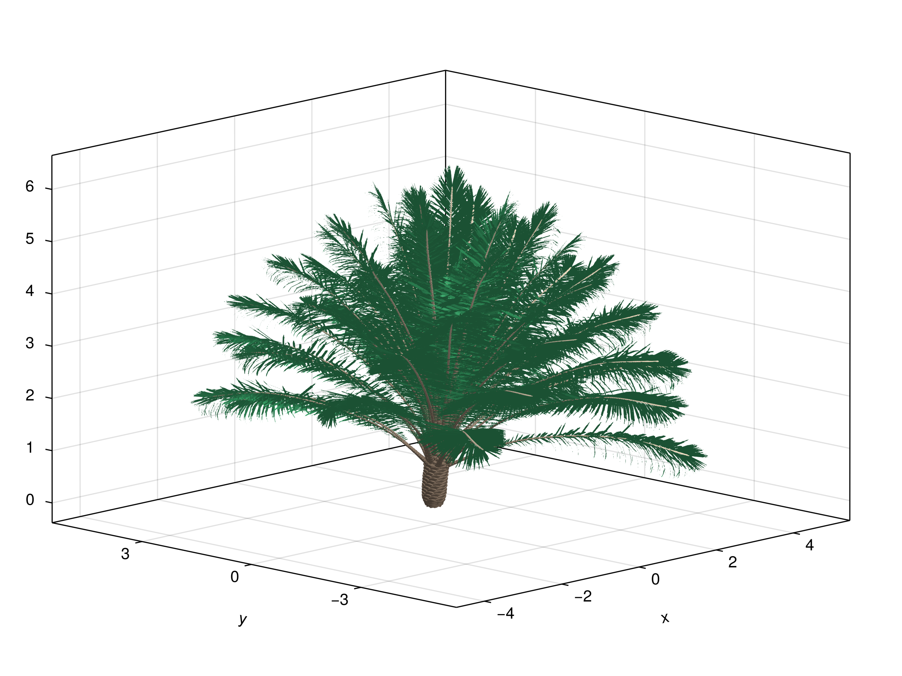

XPalm - A growth and yield model for oil palm


XPalm is a growth and yield model for oil palm (Elaeis guineensis).
Overview
XPalm is a process-based model for simulating oil palm (Elaeis guineensis) growth and development. The model simulates key physiological processes including:
- Phenology and development
- Carbon assimilation and allocation
- Water balance
- Reproductive organ development
- Yield components
XPalm implements a multiscale approach, modeling processes at different organizational levels:
Scene: Environment and canopy-level processes Plant: Whole palm processes Phytomer: Individual growth unit processes Organ: Leaf, internode and reproductive organ processes
The model uses a daily time step and requires standard meteorological inputs (temperature, radiation, rainfall...).
The model also includes a submodule VPalm to design palm tree mockups from a set of architectural parameters and allometric equations. It is designed to integrate smoothly with the physiological models from the package.
The model is implemented in the Julia programming language, which is a high-level, high-performance dynamic programming language for technical computing.
Example outputs
Here are some example outputs from the model, showing the evolution of variables at different scales:
Scene level:
Leaf area index (LAI) at the scene level over time:

Plant level:
Maintenance respiration (Rm), absorbed PPFD (aPPFD), biomass of bunches harvested, and leaf area at the plant level over time:

Leaf level:
Leaf area at the level of the individual leaf over time:

Soil level:
Fraction of transpirable soil water (FTSW) over time:

Installation
Install XPalm using Julia's package manager, typing ] in the Julia REPL (i.e. the console) to enter the Pkg REPL mode and then typing:
pkg> add XPalmTo use the package, type the following in the Julia REPL:
using XPalmQuick Start
From the Julia REPL, load the package:
using XPalmThe easiest way of running the model
The easiest way to run the model is to use the template notebook provided by the package. To run the notebook, you need to install the Pluto package first by running ] add Pluto. Then, you can run the notebook using the following commands in the Julia REPL:
using Pluto, XPalm
XPalm.notebook("xpalm_notebook.jl")This command will create a new Pluto notebook (named "xpalm_notebook.jl") in the current directory, and open it automatically for you.
Once closed, you can re-open this notebook by running the same command again. If the file already exists, it will be opened automatically.
Programmatically running the model
Basic simulation
Run a simple simulation using default parameters and meteorological data:
using XPalm, CSV, DataFrames
# Load example meteorological data
meteo = CSV.read(joinpath(dirname(dirname(pathof(XPalm))), "0-data/meteo.csv"), DataFrame)
# Run simulation
df = xpalm(meteo, DataFrame;
vars = Dict("Scene" => (:lai,)), # Request LAI as output
)You need to install the CSV and DataFrames packages to run the example above. You can install them by running ] add CSV DataFrames.
Advanced Usage
Customize palm parameters and request multiple outputs:
# Read the parameters from a YAML file (provided in the example folder of the package). Note that parameter keys should be imported as `Symbol`s
using YAML
parameters = YAML.load_file(joinpath(dirname(dirname(pathof(XPalm))), "examples/xpalm_parameters.yml"); dicttype=Dict{Symbol,Any})
# Load example meteorological data
meteo = CSV.read(joinpath(dirname(dirname(pathof(XPalm))), "0-data/meteo.csv"), DataFrame)
# Create palm with custom parameters
p = XPalm.Palm(parameters=parameters)
# Run simulation with multiple outputs
results = xpalm(
meteo,
DataFrame,
vars = Dict(
"Scene" => (:lai,),
"Plant" => (:leaf_area, :biomass_bunch_harvested),
"Soil" => (:ftsw,)
),
palm = p,
)You can also import the parameters from a JSON file using the JSON package:
using JSON # You first need to install the JSON package by running `] add JSON`
params = open(joinpath(dirname(dirname(pathof(XPalm))), "examples/xpalm_parameters.json"), "r") do io
JSON.parse(io; dicttype=Dict{Symbol,Any}, inttype=Int64)
endThe configuration file must contain all the parameters required by the model. Template files are available from the examples folder.
Importing the models
The models are available from the Models submodule. To import all models, you can use the following command:
using XPalm
using XPalm.ModelsMore examples
The package provides an example script in the examples folder. To run it, you first have to place your working directory inside the folder, and then activate its environement by running ] activate ..
You can also find example applications in the Xpalm applications Github repository.
VPalm
The package also includes a submodule VPalm that is an automaton that builds 3d mockups of palm plants from architectural parameters and allometric equations. It also integrates a biomechanical model to compute the leaf bending and torsion using the biomass of each leaf.
You can run VPalm simply by loading the submodule. Here is an example to load VPalm default parameters and build a palm tree with a multiscale architecture defined using the Multiscale Tree Graph format (MTG).
using XPalm
using XPalm.VPalm
# Load example parameters
file = joinpath(dirname(dirname(pathof(XPalm))), "test", "references", "vpalm-parameter_file.yml")
parameters = read_parameters(file)
mtg = build_mockup(parameters)
viz(mtg, color = :green)
Code to reproduce this image
To reproduce the image above, you can use the following code snippet. It will create a mockup of a palm plant with colored segments based on their type.
using XPalm
using XPalm.VPalm
file = joinpath(dirname(dirname(pathof(XPalm))), "test", "references", "vpalm-parameter_file.yml")
parameters = read_parameters(file)
mtg = build_mockup(parameters; merge_scale=:leaflet)
traverse!(mtg) do node
if symbol(node) == "Petiole"
petiole_and_rachis_segments = descendants(node, symbol=["PetioleSegment", "RachisSegment"])
colormap = cgrad([colorant"peachpuff4", colorant"blanchedalmond"], length(petiole_and_rachis_segments), scale=:log2)
for (i, seg) in enumerate(petiole_and_rachis_segments)
seg[:color_type] = colormap[i]
end
elseif symbol(node) == "Leaflet"
node[:color_type] = :mediumseagreen
elseif symbol(node) == "Leaf" # This will color the snags
node[:color_type] = :peachpuff4
end
end
f, ax, p = viz(mtg, color=:color_type)
save("palm_mockup.png", f, size=(800, 600), px_per_unit=3)Note that the MTG is built with the following scales: ["Plant", "Stem", "Phytomer", "Internode", "Leaf", "Petiole", "PetioleSegment", "Rachis", "RachisSegment", "Leaflet", "LeafletSegment"].
Funding
This work is supported by the PalmStudio research project, funded by the SMART Research Institute and CIRAD.
API
Index
XPalm.Models.AbortionRateXPalm.Models.AbstractAbortionModelXPalm.Models.AbstractBiomassModelXPalm.Models.AbstractBiomass_From_AreaModelXPalm.Models.AbstractBiomass_To_AreaModelXPalm.Models.AbstractCarbon_AllocationModelXPalm.Models.AbstractCarbon_AssimilationModelXPalm.Models.AbstractCarbon_DemandModelXPalm.Models.AbstractCarbon_OfferModelXPalm.Models.AbstractFTSWModelXPalm.Models.AbstractFinal_Potential_BiomassModelXPalm.Models.AbstractHarvestModelXPalm.Models.AbstractInitiation_AgeModelXPalm.Models.AbstractInternode_DimensionsModelXPalm.Models.AbstractInternode_Final_Potential_DimensionsModelXPalm.Models.AbstractInternode_Potential_DimensionsModelXPalm.Models.AbstractLai_DynamicModelXPalm.Models.AbstractLeaf_AreaModelXPalm.Models.AbstractLeaf_Final_Potential_AreaModelXPalm.Models.AbstractLeaf_Potential_AreaModelXPalm.Models.AbstractLeaf_PruningModelXPalm.Models.AbstractLeaf_RankModelXPalm.Models.AbstractLight_InterceptionModelXPalm.Models.AbstractMaintenance_RespirationModelXPalm.Models.AbstractNumber_FruitsModelXPalm.Models.AbstractNumber_SpikeletsModelXPalm.Models.AbstractPhyllochronModelXPalm.Models.AbstractPhytomer_CountModelXPalm.Models.AbstractPhytomer_EmissionModelXPalm.Models.AbstractPlant_AgeModelXPalm.Models.AbstractPotential_EvapotranspirationModelXPalm.Models.AbstractReproductive_Organ_EmissionModelXPalm.Models.AbstractReserve_FillingModelXPalm.Models.AbstractRoot_GrowthModelXPalm.Models.AbstractSex_DeterminationModelXPalm.Models.AbstractSoil_WaterModelXPalm.Models.AbstractStateModelXPalm.Models.AbstractThermal_TimeModelXPalm.Models.BeerXPalm.Models.CarbonOfferRmXPalm.Models.ConstantRUEModelXPalm.Models.DailyDegreeDaysXPalm.Models.DailyDegreeDaysSinceInitXPalm.Models.DailyPlantAgeModelXPalm.Models.DegreeDaysFTSWXPalm.Models.ET0_BPXPalm.Models.FTSWXPalm.Models.FTSW_BPXPalm.Models.FemaleBiomassXPalm.Models.FemaleCarbonDemandModelXPalm.Models.FemaleFinalPotentialFruitsXPalm.Models.GraphNodeCountXPalm.Models.InternodeBiomassXPalm.Models.InternodeCarbonDemandModelXPalm.Models.LAIModelXPalm.Models.LeafAreaModelXPalm.Models.LeafCarbonDemandModelAreaXPalm.Models.LeafStateModelXPalm.Models.MaleBiomassXPalm.Models.MaleFinalPotentialBiomassXPalm.Models.NumberFruitsXPalm.Models.NumberSpikeletsXPalm.Models.OrgansCarbonAllocationModelXPalm.Models.PhyllochronModelXPalm.Models.PhytomerEmissionXPalm.Models.PlantLeafAreaModelXPalm.Models.PlantRmXPalm.Models.PotentialAreaModelXPalm.Models.RUE_FTSWXPalm.Models.RankLeafPruningXPalm.Models.ReproductiveOrganEmissionXPalm.Models.RmQ10FixedNXPalm.Models.RootGrowthFTSWXPalm.Models.SceneToPlantLightPartitioningXPalm.Models.SexDeterminationXPalm.PalmXPalm.PalmPlantSimEngine.run!PlantSimEngine.run!PlantSimEngine.run!PlantSimEngine.run!XPalm.Models.KSXPalm.Models.KS_bpXPalm.Models.compute_compartment_sizeXPalm.Models.compute_compartment_sizeXPalm.VPalm.add_geometry!XPalm.VPalm.add_leaflet_geometry!XPalm.VPalm.add_section_geometry!XPalm.VPalm.bendXPalm.VPalm.beta_distribution_normXPalm.VPalm.beta_distribution_norm_integralXPalm.VPalm.biomechanical_properties_rachisXPalm.VPalm.build_mockupXPalm.VPalm.c_point_angleXPalm.VPalm.calculate_segmentXPalm.VPalm.calculate_segment_anglesXPalm.VPalm.compute_leaf_rankXPalm.VPalm.compute_leaflet_type_frequenciesXPalm.VPalm.compute_number_of_leafletsXPalm.VPalm.compute_properties_internode!XPalm.VPalm.compute_properties_leaf!XPalm.VPalm.compute_properties_petiole!XPalm.VPalm.compute_properties_petiole_section!XPalm.VPalm.compute_properties_stem!XPalm.VPalm.create_leaflet_segments!XPalm.VPalm.create_leaflets_for_side!XPalm.VPalm.create_sectionXPalm.VPalm.create_single_leafletXPalm.VPalm.cylinderXPalm.VPalm.dist_and_angles_to_xyzXPalm.VPalm.draw_group_sizeXPalm.VPalm.elliptical_cylinderXPalm.VPalm.exponetialXPalm.VPalm.final_angleXPalm.VPalm.group_leafletsXPalm.VPalm.height_to_width_ratioXPalm.VPalm.inertia_flex_rotaXPalm.VPalm.internode_diameterXPalm.VPalm.internode_lengthXPalm.VPalm.interp_pointsXPalm.VPalm.leaf_insertion_angleXPalm.VPalm.leaflet_azimuthal_angleXPalm.VPalm.leaflet_length_at_bpointXPalm.VPalm.leaflet_length_maxXPalm.VPalm.leaflet_width_at_bpointXPalm.VPalm.leaflet_width_maxXPalm.VPalm.leaflet_zenithal_angleXPalm.VPalm.leaflet_zenithal_angle_boundariesXPalm.VPalm.leaflets!XPalm.VPalm.linearXPalm.VPalm.local_flexionXPalm.VPalm.logisticXPalm.VPalm.mean_and_sdXPalm.VPalm.mtg_skeletonXPalm.VPalm.normal_deviation_drawXPalm.VPalm.normal_deviation_percent_drawXPalm.VPalm.normalize_positions!XPalm.VPalm.petioleXPalm.VPalm.petiole_azimuthal_angleXPalm.VPalm.petiole_dimensions_at_cpointXPalm.VPalm.petiole_heightXPalm.VPalm.petiole_lengthXPalm.VPalm.petiole_sections!XPalm.VPalm.petiole_widthXPalm.VPalm.phyllotactic_angleXPalm.VPalm.piecewise_linear_areaXPalm.VPalm.planeXPalm.VPalm.properties_petiole_sectionXPalm.VPalm.rachisXPalm.VPalm.rachis_expansionXPalm.VPalm.rachis_heightXPalm.VPalm.rachis_length_from_biomassXPalm.VPalm.rachis_widthXPalm.VPalm.read_parametersXPalm.VPalm.read_plyXPalm.VPalm.relative_leaflet_lengthXPalm.VPalm.relative_leaflet_positionXPalm.VPalm.relative_leaflet_widthXPalm.VPalm.shrink_leaflets_in_groups!XPalm.VPalm.snagXPalm.VPalm.stem_bendingXPalm.VPalm.stem_diameterXPalm.VPalm.stem_heightXPalm.VPalm.unbendXPalm.VPalm.width_at_cpointXPalm.VPalm.write_parametersXPalm.VPalm.xyz_to_dist_and_anglesXPalm.age_relative_valueXPalm.model_mappingXPalm.notebookXPalm.xpalmXPalm.VPalm.@check_unit
XPalm
Documentation for the main functions of the XPalm package.
XPalm.Palm — TypePalm(;
nsteps=1,
initiation_age=0,
parameters=default_parameters(),
model_list=model_mapping(parameters, nsteps)
)Create a new scene with one Palm plant.
Arguments
nsteps: number of time steps to run the simulation for (default: 1, should match the number of rows in the meteo data)initiation_age: date of the first phytomer initiation (default: 0)parameters: a dictionary of parameters (default:default_parameters())model_list: a dictionary of models (default:model_mapping(parameters, nsteps))
XPalm.Palm — MethodPalm(; initiation_age=0, parameters=default_parameters())Create a new scene with one Palm plant. The scene contains a soil, a plant, a root system, a stem, a phytomer, an internode, and a leaf.
Arguments
initiation_age: days elapsed since the first phytomer initiation (default: 0)parameters: a dictionary of parameters (default:default_parameters())
Returns
- a
Palmobject
XPalm.age_relative_value — Methodage_relative_value(age, age_min_value, age_max_value, min_value, max_value)Value that depends on the plant age.
Arguments
age: the current age of the plantage_min_value: the age at which minimum value is reached (ages below this age will hagemin_value)age_max_value: the age at which the value is at the maximum value (ages above this age will hagemax_value)min_value: the value below or atage_min_valuemax_value: the value at or aboveage_max_value
Examples
julia> XPalm.age_relative_value(0, 1, 10, 0.1, 0.8)
0.1julia> XPalm.age_relative_value(5, 1, 10, 0.1, 0.8)
0.4111111111111111julia> XPalm.age_relative_value(15, 1, 10, 0.1, 0.8)
0.8XPalm.model_mapping — Methodmodel_mapping(p)Defines the list of sub-models used in XPalm.
Arguments
p: A palm object with the parameters of the model (e.g. p = Palm()).
Returns
- A multiscale list of models, as a dictionary of scale (keys) and list of models (values).
XPalm.notebook — Functionnotebook(copyto::String; force::Bool)Open an XPalm notebook or create one from a template at path, and run the notebook.
Arguments
path::String: The path to the notebook file. If it exists, it will be opened (unlessforce=true), otherwise it will be created.force::Bool=false: Iftrue, overwrite the file atpath.
Example
using XPalm, Pluto
XPalm.notebook()XPalm.xpalm — Methodxpalm(meteo; vars=Dict("Scene" => (:lai,)), palm=Palm(initiation_age=0, parameters=default_parameters()))
xpalm(meteo, sink; vars=Dict("Scene" => (:lai,)), palm=Palm(initiation_age=0, parameters=default_parameters()))Run the XPalm model with the given meteo data and return the results in a DataFrame.
Arguments
meteo: DataFrame with the meteo datasink: aTables.jlcompatible sink function to format the results, for exemple aDataFramevars: A dictionary with the outputs to be returned for each scale of simulationpalm: the Palm object with the parameters of the model
Returns
A simulation output, either as a dictionary of variables per scales (default) or as a Tables.jl formatted object.
Example
using XPalm, CSV, DataFrames
meteo = CSV.read(joinpath(dirname(dirname(pathof(XPalm))), "0-data/meteo.csv"), DataFrame)
df = xpalm(meteo, DataFrame; vars= Dict("Scene" => (:lai,)))Models
Documentation for the models available in XPalm.
XPalm.Models.AbortionRate — TypeAbortionRate(TT_flowering, duration_abortion, abortion_rate_max=1.0, abortion_rate_ref=0.2; random_seed::Int=0)
AbortionRate(TT_flowering, duration_abortion, abortion_rate_max, abortion_rate_ref, random_generator<:AbstractRNG)Determines if the inflorescence will abort based on the trophic state of the plant during a given period in thermal time.
Arguments
TT_flowering: thermal time for flowering since phytomer appearence (degree days).duration_abortion: duration used for computing abortion rate before flowering (degree days).
Inputs
carbon_offer_after_rm: carbon offer after maintenance respiration (gC/plant).carbon_demand_organs: carbon demand of all organs (gC/plant).
Outputs
carbon_demand_plant: total carbon demand of the plant (gC/plant).carbon_offer_plant: total carbon offer of the plant (gC/plant).state: phytomer state (undetermined,Aborted,...)
Note
The abortion is determined at TT_flowering based on the trophic_status of the plant during a period of time before this date. The hypothesis is that a trophic stress can trigger more abortion in the plant.
XPalm.Models.AbstractAbortionModel — Typeabortion process abstract model.
All models implemented to simulate the abortion process must be a subtype of this type, e.g. struct MyAbortionModel <: AbstractAbortionModel end.
You can list all models implementing this process using subtypes:
Examples
subtypes(AbstractAbortionModel)XPalm.Models.AbstractBiomassModel — Typebiomass process abstract model.
All models implemented to simulate the biomass process must be a subtype of this type, e.g. struct MyBiomassModel <: AbstractBiomassModel end.
You can list all models implementing this process using subtypes:
Examples
subtypes(AbstractBiomassModel)XPalm.Models.AbstractBiomass_From_AreaModel — Typebiomass_from_area process abstract model.
All models implemented to simulate the biomass_from_area process must be a subtype of this type, e.g. struct MyBiomass_From_AreaModel <: AbstractBiomass_From_AreaModel end.
You can list all models implementing this process using subtypes:
Examples
subtypes(AbstractBiomass_From_AreaModel)XPalm.Models.AbstractBiomass_To_AreaModel — Typebiomass_to_area process abstract model.
All models implemented to simulate the biomass_to_area process must be a subtype of this type, e.g. struct MyBiomass_To_AreaModel <: AbstractBiomass_To_AreaModel end.
You can list all models implementing this process using subtypes:
Examples
subtypes(AbstractBiomass_To_AreaModel)XPalm.Models.AbstractCarbon_AllocationModel — Typecarbon_allocation process abstract model.
All models implemented to simulate the carbon_allocation process must be a subtype of this type, e.g. struct MyCarbon_AllocationModel <: AbstractCarbon_AllocationModel end.
You can list all models implementing this process using subtypes:
Examples
subtypes(AbstractCarbon_AllocationModel)XPalm.Models.AbstractCarbon_AssimilationModel — Typecarbon_assimilation process abstract model.
All models implemented to simulate the carbon_assimilation process must be a subtype of this type, e.g. struct MyCarbon_AssimilationModel <: AbstractCarbon_AssimilationModel end.
You can list all models implementing this process using subtypes:
Examples
subtypes(AbstractCarbon_AssimilationModel)XPalm.Models.AbstractCarbon_DemandModel — Typecarbon_demand process abstract model.
All models implemented to simulate the carbon_demand process must be a subtype of this type, e.g. struct MyCarbon_DemandModel <: AbstractCarbon_DemandModel end.
You can list all models implementing this process using subtypes:
Examples
subtypes(AbstractCarbon_DemandModel)XPalm.Models.AbstractCarbon_OfferModel — Typecarbon_offer process abstract model.
All models implemented to simulate the carbon_offer process must be a subtype of this type, e.g. struct MyCarbon_OfferModel <: AbstractCarbon_OfferModel end.
You can list all models implementing this process using subtypes:
Examples
subtypes(AbstractCarbon_OfferModel)XPalm.Models.AbstractFTSWModel — TypeAbstractFTSWModel <: AbstractSoil_WaterModelDefines a structure for soil water model that computes ftsw as an output.
XPalm.Models.AbstractFinal_Potential_BiomassModel — Typefinal_potential_biomass process abstract model.
All models implemented to simulate the final_potential_biomass process must be a subtype of this type, e.g. struct MyFinal_Potential_BiomassModel <: AbstractFinal_Potential_BiomassModel end.
You can list all models implementing this process using subtypes:
Examples
subtypes(AbstractFinal_Potential_BiomassModel)XPalm.Models.AbstractHarvestModel — Typeharvest process abstract model.
All models implemented to simulate the harvest process must be a subtype of this type, e.g. struct MyHarvestModel <: AbstractHarvestModel end.
You can list all models implementing this process using subtypes:
Examples
subtypes(AbstractHarvestModel)XPalm.Models.AbstractInitiation_AgeModel — Typeinitiation_age process abstract model.
All models implemented to simulate the initiation_age process must be a subtype of this type, e.g. struct MyInitiation_AgeModel <: AbstractInitiation_AgeModel end.
You can list all models implementing this process using subtypes:
Examples
subtypes(AbstractInitiation_AgeModel)XPalm.Models.AbstractInternode_DimensionsModel — Typeinternode_dimensions process abstract model.
All models implemented to simulate the internode_dimensions process must be a subtype of this type, e.g. struct MyInternode_DimensionsModel <: AbstractInternode_DimensionsModel end.
You can list all models implementing this process using subtypes:
Examples
subtypes(AbstractInternode_DimensionsModel)XPalm.Models.AbstractInternode_Final_Potential_DimensionsModel — Typeinternode_final_potential_dimensions process abstract model.
All models implemented to simulate the internode_final_potential_dimensions process must be a subtype of this type, e.g. struct MyInternode_Final_Potential_DimensionsModel <: AbstractInternode_Final_Potential_DimensionsModel end.
You can list all models implementing this process using subtypes:
Examples
subtypes(AbstractInternode_Final_Potential_DimensionsModel)XPalm.Models.AbstractInternode_Potential_DimensionsModel — Typeinternode_potential_dimensions process abstract model.
All models implemented to simulate the internode_potential_dimensions process must be a subtype of this type, e.g. struct MyInternode_Potential_DimensionsModel <: AbstractInternode_Potential_DimensionsModel end.
You can list all models implementing this process using subtypes:
Examples
subtypes(AbstractInternode_Potential_DimensionsModel)XPalm.Models.AbstractLai_DynamicModel — Typelai_dynamic process abstract model.
All models implemented to simulate the lai_dynamic process must be a subtype of this type, e.g. struct MyLai_DynamicModel <: AbstractLai_DynamicModel end.
You can list all models implementing this process using subtypes:
Examples
subtypes(AbstractLai_DynamicModel)XPalm.Models.AbstractLeaf_AreaModel — Typeleaf_area process abstract model.
All models implemented to simulate the leaf_area process must be a subtype of this type, e.g. struct MyLeaf_AreaModel <: AbstractLeaf_AreaModel end.
You can list all models implementing this process using subtypes:
Examples
subtypes(AbstractLeaf_AreaModel)XPalm.Models.AbstractLeaf_Final_Potential_AreaModel — Typeleaf_final_potential_area process abstract model.
All models implemented to simulate the leaf_final_potential_area process must be a subtype of this type, e.g. struct MyLeaf_Final_Potential_AreaModel <: AbstractLeaf_Final_Potential_AreaModel end.
You can list all models implementing this process using subtypes:
Examples
subtypes(AbstractLeaf_Final_Potential_AreaModel)XPalm.Models.AbstractLeaf_Potential_AreaModel — Typeleaf_potential_area process abstract model.
All models implemented to simulate the leaf_potential_area process must be a subtype of this type, e.g. struct MyLeaf_Potential_AreaModel <: AbstractLeaf_Potential_AreaModel end.
You can list all models implementing this process using subtypes:
Examples
subtypes(AbstractLeaf_Potential_AreaModel)XPalm.Models.AbstractLeaf_PruningModel — Typeleaf_pruning process abstract model.
All models implemented to simulate the leaf_pruning process must be a subtype of this type, e.g. struct MyLeaf_PruningModel <: AbstractLeaf_PruningModel end.
You can list all models implementing this process using subtypes:
Examples
subtypes(AbstractLeaf_PruningModel)XPalm.Models.AbstractLeaf_RankModel — Typeleaf_rank process abstract model.
All models implemented to simulate the leaf_rank process must be a subtype of this type, e.g. struct MyLeaf_RankModel <: AbstractLeaf_RankModel end.
You can list all models implementing this process using subtypes:
Examples
subtypes(AbstractLeaf_RankModel)XPalm.Models.AbstractLight_InterceptionModel — Typelight_interception process abstract model.
All models implemented to simulate the light_interception process must be a subtype of this type, e.g. struct MyLight_InterceptionModel <: AbstractLight_InterceptionModel end.
You can list all models implementing this process using subtypes:
Examples
subtypes(AbstractLight_InterceptionModel)XPalm.Models.AbstractMaintenance_RespirationModel — Typemaintenance_respiration process abstract model.
All models implemented to simulate the maintenance_respiration process must be a subtype of this type, e.g. struct MyMaintenance_RespirationModel <: AbstractMaintenance_RespirationModel end.
You can list all models implementing this process using subtypes:
Examples
subtypes(AbstractMaintenance_RespirationModel)Generic maintenance repspiration model.
The models used are defined by the types of the maintenance_respiration fields of a ModelList.
Examples
meteo = Atmosphere(T = 20.0, Wind = 1.0, P = 101.3, Rh = 0.65)
# Using Fvcb model:
leaf =
ModelList(
maintenance_respiration = RmQ10(),
status = (Tₗ = 25.0, PPFD = 1000.0, Cₛ = 400.0, Dₗ = meteo.VPD)
)
maintenance_respiration(leaf, meteo)XPalm.Models.AbstractNumber_FruitsModel — Typenumber_fruits process abstract model.
All models implemented to simulate the number_fruits process must be a subtype of this type, e.g. struct MyNumber_FruitsModel <: AbstractNumber_FruitsModel end.
You can list all models implementing this process using subtypes:
Examples
subtypes(AbstractNumber_FruitsModel)XPalm.Models.AbstractNumber_SpikeletsModel — Typenumber_spikelets process abstract model.
All models implemented to simulate the number_spikelets process must be a subtype of this type, e.g. struct MyNumber_SpikeletsModel <: AbstractNumber_SpikeletsModel end.
You can list all models implementing this process using subtypes:
Examples
subtypes(AbstractNumber_SpikeletsModel)XPalm.Models.AbstractPhyllochronModel — Typephyllochron process abstract model.
All models implemented to simulate the phyllochron process must be a subtype of this type, e.g. struct MyPhyllochronModel <: AbstractPhyllochronModel end.
You can list all models implementing this process using subtypes:
Examples
subtypes(AbstractPhyllochronModel)XPalm.Models.AbstractPhytomer_CountModel — Typephytomer_count process abstract model.
All models implemented to simulate the phytomer_count process must be a subtype of this type, e.g. struct MyPhytomer_CountModel <: AbstractPhytomer_CountModel end.
You can list all models implementing this process using subtypes:
Examples
subtypes(AbstractPhytomer_CountModel)XPalm.Models.AbstractPhytomer_EmissionModel — Typephytomer_emission process abstract model.
All models implemented to simulate the phytomer_emission process must be a subtype of this type, e.g. struct MyPhytomer_EmissionModel <: AbstractPhytomer_EmissionModel end.
You can list all models implementing this process using subtypes:
Examples
subtypes(AbstractPhytomer_EmissionModel)XPalm.Models.AbstractPlant_AgeModel — Typeplant_age process abstract model.
All models implemented to simulate the plant_age process must be a subtype of this type, e.g. struct MyPlant_AgeModel <: AbstractPlant_AgeModel end.
You can list all models implementing this process using subtypes:
Examples
subtypes(AbstractPlant_AgeModel)XPalm.Models.AbstractPotential_EvapotranspirationModel — Typepotential_evapotranspiration process abstract model.
All models implemented to simulate the potential_evapotranspiration process must be a subtype of this type, e.g. struct MyPotential_EvapotranspirationModel <: AbstractPotential_EvapotranspirationModel end.
You can list all models implementing this process using subtypes:
Examples
subtypes(AbstractPotential_EvapotranspirationModel)XPalm.Models.AbstractReproductive_Organ_EmissionModel — Typereproductive_organ_emission process abstract model.
All models implemented to simulate the reproductive_organ_emission process must be a subtype of this type, e.g. struct MyReproductive_Organ_EmissionModel <: AbstractReproductive_Organ_EmissionModel end.
You can list all models implementing this process using subtypes:
Examples
subtypes(AbstractReproductive_Organ_EmissionModel)XPalm.Models.AbstractReserve_FillingModel — Typereserve_filling process abstract model.
All models implemented to simulate the reserve_filling process must be a subtype of this type, e.g. struct MyReserve_FillingModel <: AbstractReserve_FillingModel end.
You can list all models implementing this process using subtypes:
Examples
subtypes(AbstractReserve_FillingModel)XPalm.Models.AbstractRoot_GrowthModel — Typeroot_growth process abstract model.
All models implemented to simulate the root_growth process must be a subtype of this type, e.g. struct MyRoot_GrowthModel <: AbstractRoot_GrowthModel end.
You can list all models implementing this process using subtypes:
Examples
subtypes(AbstractRoot_GrowthModel)XPalm.Models.AbstractSex_DeterminationModel — Typesex_determination process abstract model.
All models implemented to simulate the sex_determination process must be a subtype of this type, e.g. struct MySex_DeterminationModel <: AbstractSex_DeterminationModel end.
You can list all models implementing this process using subtypes:
Examples
subtypes(AbstractSex_DeterminationModel)XPalm.Models.AbstractSoil_WaterModel — Typesoil_water process abstract model.
All models implemented to simulate the soil_water process must be a subtype of this type, e.g. struct MySoil_WaterModel <: AbstractSoil_WaterModel end.
You can list all models implementing this process using subtypes:
Examples
subtypes(AbstractSoil_WaterModel)XPalm.Models.AbstractStateModel — Typestate process abstract model.
All models implemented to simulate the state process must be a subtype of this type, e.g. struct MyStateModel <: AbstractStateModel end.
You can list all models implementing this process using subtypes:
Examples
subtypes(AbstractStateModel)XPalm.Models.AbstractThermal_TimeModel — Typethermal_time process abstract model.
All models implemented to simulate the thermal_time process must be a subtype of this type, e.g. struct MyThermal_TimeModel <: AbstractThermal_TimeModel end.
You can list all models implementing this process using subtypes:
Examples
subtypes(AbstractThermal_TimeModel)XPalm.Models.Beer — TypeBeer(k)Beer-Lambert law for light interception.
Arguments
k: extinction coefficient of light
Inputs
laiin m² m⁻².
Required meteorology data
Ri_PAR_f: incident flux of atmospheric radiation in the PAR, in MJ m⁻² d⁻¹.
Outputs
aPPFD: absorbed Photosynthetic Photon Flux Density in mol[PAR] m[soil]⁻² d⁻¹.
XPalm.Models.CarbonOfferRm — TypeCarbonOfferRm()A model that computes carbon offer as the carbon assimilation minus the maintenance respiration.
XPalm.Models.ConstantRUEModel — TypeConstantRUEModel(rue)Computes the carbon_assimilation using a constant radiation use efficiency (rue).
Arguments
rue: radiation use efficiency (gC MJ⁻¹)
Inputs
aPPFD: the absorbed Photosynthetic Photon Flux Density in mol[PAR] m[leaf]⁻² s⁻¹.
Outputs
carbon_assimilation: carbon offer from photosynthesis
XPalm.Models.DailyDegreeDays — TypeDailyDegreeDays(TOpt1, TOpt2, TBase, TLim)
DailyDegreeDays(TOpt1=25, TOpt2=30, TBase=15, TLim=40)Compute thermal time from daily meteo data
Arguments
TOpt1: starting optimal temperature for thermal time calculation (degree Celsius)TOpt2: ending optimal temperature for thermal time calculation (degree Celsius)TBase: Tbase temperature for thermal time calculation (degree Celsius)TLim: limit temperature for thermal time calculation (degree Celsius)
Outputs
TEff: daily efficient temperature for plant growth (degree C days)
XPalm.Models.DailyDegreeDaysSinceInit — TypeDailyDegreeDaysSinceInit()Compute thermal time since organ initiation using :TEff.
Outputs
TT_since_init: daily efficient temperature for organ growth (degree C days)
XPalm.Models.DailyPlantAgeModel — TypeDailyPlantAgeModel(initiation_age)Plant age model, simply tracks the age of the plant in days.
Arguments
initiation_age: age of the plant at the start of the simulation (days)
Returns
age: age of the plant (days)
XPalm.Models.DegreeDaysFTSW — TypeDegreeDaysFTSW(TOpt1, TOpt2, TBase, TLim, threshold_ftsw_stress)
DegreeDaysFTSW(TOpt1=25, TOpt2=30, TBase=15, TLim=40, threshold_ftsw_stress=0.3)Compute thermal time from daily meteo data, corrected by FTSW
Arguments
TOpt1: starting optimal temperature for thermal time calculation (degree Celsius)TOpt2: ending optimal temperature for thermal time calculation (degree Celsius)TBase: Tbase temperature for thermal time calculation (degree Celsius)TLim: limit temperature for thermal time calculation (degree Celsius)threshold_ftsw_stress: threshold value under which we apply an FTSW stress
Inputs
ftsw: fraction of transpirable soil water (unitless)
Ouputs
TEff: daily efficient temperature for plant growth (degree C days)TT_since_init: cumulated thermal time from the first day (degree C days)
XPalm.Models.ET0_BP — TypeET0_BP(LATITUDE,ALTITUDE)
ET0_BP(LATITUDE=0.97,ALTITUDE=50)Compute potential evapotranspiration
Arguments
LATITUDE: latitude (radian)ALTITUDE: altitude (m)
Inputs
- meteo
Outputs
ET0: potential evapotranpiration (mm)
XPalm.Models.FTSW — TypeFTSW(;
ini_root_depth,
H_FC=0.23,
H_WP_Z1=0.05,
Z1=200.0,
H_WP_Z2=0.05,
Z2=2000.0,
H_0=0.15,
KC=1.0,
TRESH_EVAP=0.5,
TRESH_FTSW_TRANSPI=0.5,
)Fraction of Transpirable Soil Water model.
Note that there is also a method for FTSW that takes an organ type as type, e.g. FTSW{Leaf}(ini_root_depth = 200.0).
Arguments
ini_root_depth: root depth at initialization (mm)H_FC: Humidity at field capacity (g[H20] g[Soil])H_WP_Z1: Humidity at wilting point (g[H20] g[Soil]) for the first layerZ1: Thickness of the first layer (mm)H_WP_Z2: Humidity at wilting point (g[H20] g[Soil]) for the second layerZ2: Thickness of the second layer (mm)H_0: Initial soil humidity (g[H20] g[Soil])KC: crop coefficient (unitless)TRESH_EVAP: fraction of water content in the evaporative layer below which evaporation is reduced (g[H20] g[Soil])TRESH_FTSW_TRANSPI: FTSW treshold below which transpiration is reduced (g[H20] g[Soil])
XPalm.Models.FTSW_BP — TypeFTSW_BP(H_FC::Float64, H_WP_Z1::Float64,Z1::Float64,H_WP_Z2::Float64,Z2::Float64,H_0::Float64,KC::Float64,TRESH_EVAP::Float64,TRESH_FTSW_TRANSPI::Float64)Fraction of Transpirable Soil Water model.
Arguments
ini_root_depth: root depth at initialization (mm)H_FC: Humidity at field capacity (g[H20] g[Soil])H_WP_Z1: Humidity at wilting point (g[H20] g[Soil]) for the first layerZ1: Thickness of the first layer (mm)H_WP_Z2: Humidity at wilting point (g[H20] g[Soil]) for the second layerZ2: Thickness of the second layer (mm)H_0: Initial soil humidity (g[H20] g[Soil])KC: cultural coefficient (unitless)TRESH_EVAP: fraction of water content in the evaporative layer below which evaporation is reduced (g[H20] g[Soil])TRESH_FTSW_TRANSPI: FTSW treshold below which transpiration is reduced (g[H20] g[Soil])
XPalm.Models.FemaleBiomass — TypeFemaleBiomass(respirationcost,respirationcostoleosynthesis) FemaleBiomass(respirationcost=1.44,respirationcostoleosynthesis=3.2)
Compute female biomass (inflo and bunch) from daily carbon allocation. Allocation to the different components of the bunch (stalk adnd fruit) is proportional to their carbon demand.
Arguments
respiration_cost: respiration cost (g g-1)respiration_cost_oleosynthesis: respiration cost of fruits oil (g g-1)
inputs
carbon_allocation: carbon allocated to female inflocarbon_demand_stalk: carbon demand of the stalkcarbon_demand_non_oil: carbon demand of non oil components of fruitscarbon_demand_oil: carbon demand of fruits oilstate: state of the inflorescence
outputs
biomass: total ifnlo/bunch biomassbiomass_stalk: stalk biomassbiomass_fruits: fruits biomass
XPalm.Models.FemaleCarbonDemandModel — TypeFemaleCarbonDemandModel(
respiration_cost,
respiration_cost_oleosynthesis,
TT_flowering,
TT_fruiting,
duration_bunch_development,
duration_oleosynthesis,
duration_dev_stalk,
)
FemaleCarbonDemandModel(;
respiration_cost=1.44,
respiration_cost_oleosynthesis=3.2,
TT_flowering=10530.0,
duration_bunch_development=1215.0,
duration_fruit_setting=405.0,
fraction_period_oleosynthesis=0.8,
fraction_period_stalk=0.2
)Carbon demand of the female inflorescence based on the potential fruit biomass
Arguments
respiration_cost: growth respiration cost (g g⁻¹)respiration_cost_oleosynthesis: respiration cost during oleosynthesis (g g⁻¹)TT_flowering: thermal time for flowering since phytomer appearance (degree days).TT_fruiting: thermal time for fruit setting since phytomer appearance (degree days).duration_bunch_development: duration between fruit set and bunch maturity (ready for harvest) (degree days).duration_oleosynthesis: duration of oleosynthesis (degree days).duration_dev_stalk: duration of stalk development (degree days).duration_fruit_setting: period of thermal time after flowering that determines the number of flowers in the bunch that become fruits, i.e. fruit set (degree days).fraction_period_oleosynthesis: fraction of the duration between flowering and harvesting when oleosynthesis occursfraction_period_stalk: fraction of the duration between flowering and harvesting when stalk development occurs
Inputs
final_potential_biomass_non_oil_fruit: potential fruit biomass that is not oil (g fruit-1)final_potential_biomass_oil_fruit: potential oil biomass in the fruit (g fruit-1)TEff: daily effective temperature (°C)TT_since_init: thermal time since the first day of the phytomer (degree days)state: state of the leaf
Outputs
carbon_demand: total carbon demand (g[sugar])carbon_demand_oil: carbon demand for oil production (g[sugar])carbon_demand_non_oil: carbon demand for non-oil production (g[sugar])carbon_demand_stalk: carbon demand for stalk development (g[sugar])
XPalm.Models.FemaleFinalPotentialFruits — TypeFemaleFinalPotentialFruits(;
days_increase_number_fruits=2379,
days_maximum_number_fruits=6500,
fraction_first_female=0.3,
potential_fruit_number_at_maturity=2000,
potential_fruit_weight_at_maturity=6.5,
stalk_max_biomass=2100.0,
oil_content=0.25
)Arguments
days_increase_number_fruits: age at which the number of fruits starts to increase (days)days_maximum_number_fruits: age at which the palm makes bunch of mature size with the highest number of fruits (days).fraction_first_female: size of the first bunches on a young palm relative to the size
at maturity (dimensionless)
potential_fruit_number_at_maturity: potential number of fruits at maturity (number of fruits)potential_fruit_weight_at_maturity: potential weight of one fruit at maturity (g)stalk_max_biomass: maximum biomass of the stalk (g)oil_content: oil content in the fruit (g oil g⁻¹ fruit)
Inputs
initiation_age: age at which the palm starts to make bunches (days)
Outputs
potential_fruits_number: potential number of fruits (number of fruits)final_potential_fruit_biomass: potential biomass of fruits (g)final_potential_biomass_stalk: potential biomass of stalk (g)
Examples
using PlantSimEngine
using MultiScaleTreeGraph
using XPalm
using XPalm.Models
node = Node(NodeMTG("/", "Plant", 1, 1))
pot_model = FemaleFinalPotentialFruits(8.0 * 365, 0.3, 2000.0, 6.5, 2100.0)
m = ModelList(
pot_model,
status = (initiation_age = 5000.0, )
)
meteo = Atmosphere(T = 20.0, Wind = 1.0, P = 101.3, Rh = 0.65)
run!(m, meteo, PlantMeteo.Constants(), node)
m[:potential_fruits_number]XPalm.Models.GraphNodeCount — TypeGraphNodeCount(graph_node_count_ini=0)Stores the number of nodes in the graph.
Arguments
graph_node_count_ini: the initial number of nodes in the graph.
Outputs
graph_node_count: the number of nodes in the graph.
Details
This model does nothing. It is just used to define the value of the graph's node count so it exists in the status of the organ.
The node cound should be updated by the models that create new organs at the time-step of organ emission.
XPalm.Models.InternodeBiomass — TypeInternodeBiomass(respirationcost) InternodeBiomass(respirationcost=1.44)
Compute internode biomass from daily carbon allocation
Arguments
initial_biomass: initial biomass of the internode (g)respiration_cost: repisration cost (g g-1)
Inputs
carbon_allocation:carbon allocated to the internode
Outputs
biomass: internode biomass (g)
XPalm.Models.InternodeCarbonDemandModel — TypeInternodeCarbonDemandModel(; apparentdensitydry=300000.0, carbonconcentration=0.5, respirationcost=1.44)
Compute internode carbon demand from potential dimensions
Arguments
apparent_density: stem apparent density of dry matter (g[dry mass] m⁻³).carbon_concentration: carbon concentration in the stem (g[C] g[dry mass]⁻¹).respiration_cost: repisration cost (g[sugar].g[carbon mass]-1)
Notes
The stem apparent density is transformed into a carbon density by multiplying it by the carbon concentration.
Inputs
potential_height: potential height of the internode (m)potential_radius: potential radius of the internode (m)
Outputs
potential_volume: potential volume of the internode (m³)carbon_demand: daily carbon demand of the internode (g[sugar])
XPalm.Models.LAIModel — TypeLAIModel()
Compute the leaf area index (LAI) using all leaves in the scene and the scene surface area.
Arguments
area: the surface area of the scene.
Inputs
leaf_areas: a vector of all leaf area values in the scene (from each leaf, or each plant)
Outputs
leaf_area: the total leaf area of the scene (m²)lai: the leaf area index (m² m⁻²)
XPalm.Models.LeafAreaModel — TypeLeafAreaModel(lma_min, leaflets_biomass_contribution, leaf_area_ini)Leaf area from its biomass.
Arguments
lma_min: minimal leaf mass area (when there is no reserve in the leaf)leaflets_biomass_contribution: ratio of leaflets biomass to total leaf biomass including rachis and petiole (0-1)
Inputs
biomass: leaf biomass (g)
Outputs
leaf_area: leaf area (m2)
XPalm.Models.LeafCarbonDemandModelArea — TypeLeafCarbonDemandModelArea(lma_min, respiration_cost, leaflets_biomass_contribution)Carbon demand of the leaf based on the difference between the current leaf area and the potential leaf area.
This model assumes that the leaf is always trying to catch its potential growth, so leaf demand can increase more than the daily potential to alleviate any previous stress effect.
See also LeafCarbonDemandModelPotentialArea.
Arguments
lma_min: minimum leaf mass area (g m⁻²)respiration_cost: growth respiration cost (g g⁻¹)leaflets_biomass_contribution: contribution of the leaflet biomass to the total leaf biomass (including rachis)
XPalm.Models.LeafStateModel — TypeLeafStateModel()Give the state of the leaf
Arguments
None
Inputs
maturity: a leaf is mature when it reaches its final lengthstate_phytomers: state of the phytomers (multiscale variable)
Outputs
state: leaf state ("undetermined", "Opened", "Pruned")rank_leaves: rank of all leaves
XPalm.Models.MaleBiomass — TypeMaleBiomass(respirationcost) MaleBiomass(respirationcost=1.44)
Compute male biomass from daily carbon allocation
Arguments
respiration_cost: respiration cost (g g-1)
inputs
carbon_allocation: carbon allocated to female inflostate: state of the inflorescence
outputs
biomass: inflo biomasslitter_male: biomass of senescent inflorescent that goes to the litter
XPalm.Models.MaleFinalPotentialBiomass — TypeMaleFinalPotentialBiomass(male_max_biomass, age_mature_male, fraction_biomass_first_male)Arguments
male_max_biomass: maximal biomass of a male (gC)age_mature_male: age at which the palm plant reaches a mature state for producing male inflorescences (days)fraction_biomass_first_male: fraction of the maximal biomass that first males can reach (dimensionless)
Inputs
initiation_age: age of the plant when the organ was initiated (days)
Outputs
final_potential_biomass: final potential biomass of the male inflorescence (gC)
XPalm.Models.NumberFruits — TypeNumberFruits(TT_flowering, duration_dev_fruits)Determines the number of fruits on the bunch.
Arguments
TT_flowering: thermal time for flowering since phytomer appearence (degree days).duration_fruit_setting: period of thermal time after flowering that determines the number of flowers in the bunch that become fruits, i.e. fruit set (degree days).computed:
Inputs
carbon_offer_plant: carbon offer maintenance respiration (gC/plant).potential_fruits_number: potential number of fruits (number/bunch).carbon_demand_plant: carbon demand of the plant (gC/plant), used to compute the plant trophic status.carbon_offer_plant: carbon offer of the plant (gC/plant), used to compute the plant trophic status.
Outputs
fruits_number: number of fruits (number/bunch).
XPalm.Models.NumberSpikelets — TypeNumberSpikelets(TT_flowering=6300.0, duration_dev_spikelets=675.0)Determines the number of spikelets on the fruit bunch.
Arguments
TT_flowering: thermal time for flowering since phytomer appearence (degree days).duration_dev_spikelets: period of thermal time before flowering that determines the number of spikelets on the fruit bunch (degree days).
XPalm.Models.OrgansCarbonAllocationModel — TypeOrgansCarbonAllocationModel()
Compute the carbon to allocate to organs from photosysthesis and reserve mobilization (after maintenance respiration)
Arguments
cost_reserve_mobilization: carbon cost to mobilize carbon reserve from stem or leaves
XPalm.Models.PhyllochronModel — TypePhyllochronModel(agepalmmaturity,productionspeedinitial,productionspeedmature)
Compute the phyllochron and initiate a new phytomer at every new emergence. The phyllochron may be reduced by TEff if it is itself modulated by e.g. the available water in the soil.
Arguments
age_palm_maturity: age of the plant when maturity is establiched (days)production_speed_initial: initial phyllochron (for seedlings) (leaf.degreeC days-1)production_speed_mature: phyllochron at plant maturity (leaf.degreeC days-1)
Inputs
plant_age= plant age (days)TEff: daily efficient temperature for plant growth (degree C days)ftsw= fraction of tranpirable soil water (unitless)
Outputs
newPhytomerEmergence: fraction of time during two successive phytomer (at 1 the new phytomer emerge)production_speed= phyllochron at the current plant age (leaf.degreeC days-1)
XPalm.Models.PhytomerEmission — TypePhytomerEmission(mtg; phytomer_symbol="Phytomer", internode_symbol="Internode", leaf_symbol="Leaf") <: AbstractPhytomer_EmissionModelA PhytomerEmission model, which emits a new phytomer when called. The new phytomer is composed of an internode and a leaf, and is added as a child of the last phytomer.
Arguments
mtg::MultiScaleTreeGraph.Node: The multiscale tree graph of the plant.phytomer_symbol::String: The symbol of the phytomer, default to "Phytomer".internode_symbol::String: The symbol of the internode, default to "Internode".leaf_symbol::String: The symbol of the leaf, default to "Leaf".
Inputs
graph_node_count::Int: The number of nodes in the graph.
No other inputs, except for the simulation object (sim_object) as the last argument to run!.
Outputs
last_phytomer::MultiScaleTreeGraph.Node: The last phytomer of the palm, takes its values from the struct above as its first value.phytomer_count::Int: The number of phytomers in the palm.
XPalm.Models.PlantLeafAreaModel — TypePlantLeafAreaModel()Sum of the leaf area at plant scale.
Inputs
leaf_area_leaves: a vector of leaf area (m²)leaf_states: a vector of leaf states. Only leaves with state "Opened" are considered.
Outputs
leaf_area: total leaf area of the plant (m²)
XPalm.Models.PlantRm — TypePlantRm()Total plant maintenance respiration based on the sum of Rm.
Intputs
Rm_organs: a vector of maintenance respiration from all organs in the plant in gC d⁻¹
Outputs
Rm: the total plant maintenance respiration in gC d⁻¹
XPalm.Models.PotentialAreaModel — TypePotentialAreaModel(inflexion_index, slope)
PotentialAreaModel(inflexion_index= 560.0, slope=100.0)Computes the instantaneous potential area at a given cumulative thermal time using a logistic function. In other words, it defines the development of the leaf area at the potential, i.e. without any stress. It starts around 0.0 and goes to a maximum of final_potential_area.
Arguments
inflexion_index: a parameter that defines the relationship between the final potential
leaf area and the inflexion point of the logistic function. The higher the final area, the longer the time to reach the inflexion point.
slope: the slope of the relationship at the inflexion point.
Inputs
final_potential_area: the final potential area when the leaf is fully developedTT_since_init: the cumulated thermal time since leaf initiation
Outputs
potential_area: potential area of the leaf (m2)maturity: maturity is true when the leaf reaches its final length
XPalm.Models.RUE_FTSW — TypeConstantRUEModel(rue)Computes the carbon_assimilation using a constant radiation use efficiency (rue).
Arguments
rue: radiation use efficiency (gC MJ⁻¹)
Inputs
aPPFD: the absorbed Photosynthetic Photon Flux Density in mol[PAR] m[leaf]⁻² s⁻¹.
Outputs
carbon_assimilation: carbon offer from photosynthesis
XPalm.Models.RankLeafPruning — TypeRankLeafPruning(rank)Function to remove leaf biomass and area when the phytomer has an harvested bunch or when the leaf reaches a treshold rank (below rank of harvested bunches)
Arguments
rank: leaf rank treshold below whith the leaf is cutted
Inputs
state: phytomer state
Outputs
litter_leaf: leaf biomass removed from the plantand going to the litter
XPalm.Models.ReproductiveOrganEmission — Typeadd_reproductive_organ!(...)Add a new reproductive organ to a phytomer.
XPalm.Models.RmQ10FixedN — TypeRmQ10FixedN(Q10, Mr, T_ref, P_alive)
RmQ10FixedN(Q10, Turn, Prot, N, Gi, Mx, T_ref, P_alive)Maintenance respiration based on a Q10 computation with fixed nitrogen values and proportion of living cells in the organs.
See those three references for more details:
Dufrene, Ochs, et Saugier, « Photosynthèse et productivité du palmier à huile en liaison avec les facteurs climatiques ». Wit, Simulation of Assimilation, Respiration and Transpiration of Crops; DE VRIES, « The Cost of Maintenance Processes in Plant Cells ». DE VRIES, « The Cost of Maintenance Processes in Plant Cells ».
Arguments
Q10: Q10 factor (values should usually range between: 1.5 - 2.5, with 2.1 being the most common value)Mr: maintenance respiration coefficient (gC gDM⁻¹). Should be around 0.06.T_ref: Reference temperature at which Q10 was measured (usually around 25.0°C)P_alive: proportion of living cells in the organTurn: maintenance cost coefficient of the turnover of free proteins and membranesProt= 6.25: nitrogen to protein conversion coefficientN: nitrogen content of the organ (gN gDM⁻¹)Gi: maintenance cost coefficient of the ionic gradientMx:mineral content of the organ (g gDM⁻¹)
XPalm.Models.RootGrowthFTSW — TypeRootGrowthFTSW(TRESHFTSWSLOWROOTS, ROOTSGROWTHDEPTH, Z1, Z2) RootGrowthFTSW(TRESHFTSWSLOWROOTS=0.2, ROOTSGROWTHDEPTH=0.3, Z1=200, Z2=2000)
Compute root growth depending on thermal time and water stress (ftsw)
Arguments
ini_root_depth: initial root depth (mm)ROOTS_GROWTH_DEPTH: root growth in depth (mm.degreeC days-1)TRESH_FTSW_SLOW_ROOTS: ftsw treshold below which roots growth is reduced (unitless [0:1])
The model as a dependency on an AbstractFTSWModel that must return a value for ftsw, and soil_depth.
XPalm.Models.SceneToPlantLightPartitioning — TypeSceneToPlantLightPartitioning()Partitioning from aPPFD at the scene scale to the plant scale based on the relative leaf area of the plant.
Arguments
scene_area: the surface area of the scene (m⁻²) occupied by the plant.
Inputs
aPPFD: absorbed Photosynthetic Photon Flux Density in mol[PAR] m[soil]⁻² d⁻¹ (scene scale).leaf_area: the target plant leaf areascene_leaf_area: the total scene leaf area
Outputs
aPPFD: absorbed Photosynthetic Photon Flux Density in mol[PAR] plant⁻¹ s⁻¹.
XPalm.Models.SexDetermination — TypeSexDetermination(TT_flowering, duration_abortion, duration_sex_determination, sex_ratio_min, sex_ratio_ref, rng)
SexDetermination(TT_flowering, duration_abortion, duration_sex_determination, sex_ratio_min, sex_ratio_ref; random_seed=1)Determines the sex of a phytomer -or rather, its bunch- based on the trophic state of the plant during a given period in thermal time.
Arguments
TT_flowering: thermal time for flowering since phytomer appearence (degree days).duration_abortion: duration used for computing abortion rate before flowering (degree days).duration_sex_determination: duration used for sex determination before the abortion period(degree days).sex_ratio_min: minimum allowed threshold of the sex ratio.sex_ratio_ref: reference threshold of the sex ratio, i.e. the value when the trophic status is 1 (offer=demand).rng: random number generator,Random.MersenneTwisterby default.random_seed: random seed for the random number generator, 1 by default.
Inputs
carbon_offer_plant: carbon offer at the plant scale (usually after maintenance respiration) (gC/plant).carbon_demand_plant: total carbon demand of the plant (gC/plant), used to compute the plant trophic status.
Outputs
sex: the sex of the phytomer (or bunch) ("undetermined", "Female" or "Male").carbon_demand_sex_determination: carbon demand of the plant integrated over the period of sex determination (gC/plant)carbon_offer_sex_determination: carbon offer of the plant integrated over the period of sex determination (gC/plant)
Note
The sex of the organ is determined at TT_flowering-duration_abortion based on the trophic_status of the plant during a period of time before this date. The hypothesis is that a trophic stress can trigger more males in the plant.
PlantSimEngine.run! — FunctionCompute root growth
Arguments
m: root growth model- ftsw: fraction of transpirable soil water (unitless [0:1])
- TEff: daily efficient temperature for plant growth (degree C days)
Outputs
root_depth: root depth (cm)
PlantSimEngine.run! — Functionrun!(object, meteo, constants = Constants())Computes the light interception of an object using the Beer-Lambert law.
Arguments
::Beer: a Beer model, from the model list (i.e. m.light_interception)models: AModelListstruct holding the parameters for the model with
initialisations for lai (m² m⁻²): the leaf area index.
status: the status of the model, usually the model list status (i.e. m.status)meteo: meteorology structure, seeAtmosphereconstants = PlantMeteo.Constants(): physical constants. SeePlantMeteo.Constantsfor more details
Examples
using PlantSimEngine, PlantBiophysics, PlantMeteo
m = ModelList(light_interception=Beer(0.5), status=(lai=2.0,))
meteo = Atmosphere(T=20.0, Wind=1.0, P=101.3, Rh=0.65, Ri_PAR_f=300.0)
run!(m, meteo)
m[:aPPFD]PlantSimEngine.run! — Methodadd_phytomer!(palm, initiation_age)Add a new phytomer to the palm
Arguments
palm: a Palminitiation_age::Dates.Date: date of initiation of the phytomer
PlantSimEngine.run! — Methodadd_reproductive_organ!(...)Add a new reproductive organ to a phytomer.
XPalm.Models.KS — MethodKS(fillRate, tresh)Coefficient of stress.
Arguments
fillRate: fill level of the compartmenttresh: filling treshold of the compartment below which there is a reduction in the flow
XPalm.Models.KS_bp — MethodKS_bp(fillRate, tresh)Coefficient of stress.
Arguments
fillRate: fill level of the compartmenttresh: filling treshold of the compartment below which there is a reduction in the flow
XPalm.Models.compute_compartment_size — Methodcompute_compartment_size(m, root_depth)Compute the size of the layers of the FTSW model.
Arguments
m: FTSW modelroot_depth: depth of the root system
Returns
SizeC1: size of the evapotranspirable water layer in the first soil layer (mm)SizeVap: size of the evaporative layer within the first layer (mm)SizeC1minusVap: size of the transpirable layer within the first layer (SizeC1-SizeVap)SizeC2: size of the transpirable water layer in the first soil layer (mm)SizeC: size of transpirable soil water (mm) (SizeC2 + SizeC1minusVap)
XPalm.Models.compute_compartment_size — Methodcompute_compartment_size(m, root_depth)Compute the size of the layers of the FTSW model.
Arguments
m: FTSW modelroot_depth: depth of the root system
Returns
SizeC1: size of the evapotranspirable water layer in the first soil layer (mm)SizeVap: size of the evaporative layer within the first layer (mm)SizeC1minusVap: size of the transpirable layer within the first layer (SizeC1-SizeVap)SizeC2: size of the transpirable water layer in the first soil layer (mm)SizeC: size of transpirable soil water (mm) (SizeC2 + SizeC1minusVap)
VPalm
Documentation for the main functions of the XPalm package.
XPalm.VPalm.add_geometry! — Methodadd_geometry!(
mtg, refmesh_cylinder, refmesh_snag, ref_mesh_plane;
snag_width=0.20u"m", # see defaultOrthotropyAttribute in the trunk in the java implementation
snag_height=0.15u"m",
snag_length=3.0u"m",
)Adds geometry to the MTG (Multiscale Tree Graph) for the oil palm plant architecture, i.e. compute the meshes.
XPalm.VPalm.add_leaflet_geometry! — Methodadd_leaflet_geometry!(
leaflet_node,
rachis_position,
rachis_orientation,
rachis_rotation,
stem_bending,
refmesh_plane
)Create the leaflet geometry based on its segments.
Arguments
leaflet_node: The MTG node of the leafletrachis_position: Position of the rachis section where the leaflet is attachedrachis_orientation: Orientation angles [zenithal, azimuthal, torsion] of the rachis sectionrachis_rotation: Rotation of the rachis due to phyllotaxy (radians)stem_bending: Bending of the stem (radians)refmesh_plane: Reference mesh used for the planar leaflet segments
Returns
- Nothing (the geometry is added directly to the leaflet node and its segments)
XPalm.VPalm.add_section_geometry! — Functionadd_section_geometry!(
node, internode_width, internode_height, internode_phyllotaxy, stem_bending,
refmesh_cylinder, position_section=Ref(Meshes.Point(0.0, 0.0, 0.0)), angles=[0.0, 0.0, 0.0],
type::String,
)Create the petiole/rachis sections geometry based on their dimensions.
Arguments
node: the MTG node of the petiole/rachisrefmesh_cylinder: the reference mesh used for a cylinder (PlantGeom.RefMesh)internode_width: the width of the internode on the stipe (m)internode_height: the height of the internode on the stipe (m)internode_phyllotaxy: the phyllotaxy of the internode on the stipe (°)stem_bending: the bending of the stipe (°)type::String: the type of the section ("PetioleSegment"or"RachisSegment")position_section=Ref(Meshes.Point(0.0, 0.0, 0.0)): the position of the section relative to the first one.
XPalm.VPalm.bend — Methodbend(
type, width_bend, height_bend, init_torsion, x, y, z, mass_rachis, mass_leaflets_right, mass_leaflets_left,
distance_application, elastic_modulus, shear_modulus, step, npoints, nsegments;
all_points=false,
angle_max=deg2rad(21),
force=true,
verbose=true
)Compute the deformation of the rachis by applying both bending and torsion.
Arguments
type: Vector of section types (1: triangle bottom, 2: rectangle, 3: triangle top, 4: ellipse, 5: circle).width_bend: Vector of segment section widths (m).height_bend: Vector of segment section heights (m).init_torsion: Vector of initial torsion angles (degrees).x: Vector of x coordinates of the segments.y: Vector of y coordinates of the segments.z: Vector of z coordinates of the segments.mass_rachis: Vector of rachis segment masses (kg).mass_leaflets_right: Vector of leaflet masses carried by the segment, on the right side (kg).mass_leaflets_left: Vector of leaflet masses carried by the segment, on the left side (kg).distance_application: Vector of application distances for the left and right weights (m).elastic_modulus: Vector of elasticity moduli (bending, MPa).shear_modulus: Vector of shear moduli (torsion, MPa).step: Length of the segments that discretize the object (m).npoints: Number of points used in the grid discretizing the section.nsegments: Number of segments dividing the rachis to compute the torsion and bending.all_points=false: return all points used in the computation (true), or only the input points corresponding to x, y and z coordinates (false, default).angle_max=deg2rad(21): Maximum angle for testing the small displacement hypothesis (radians).force=true: Check if verify the small displacements hypothesis and bounds the values to be at maximumangle_maxverbose=true: Provide information during computation.
Returns
Named tuple with geometrical fields describing the rachis bended and with torsion applied
x: x coordinates of the points.y: y coordinates of the points.z: z coordinates of the points.length: length of the segments.angle_xy: angle between the xy-plan and the segment.angle_xz: angle between the xz-plan and the segment.torsion: torsion angle of the segment.
All these fields are vectors of the same length as the input vectors (i.e. number of segments).
Details
The bending and torsion are applied to the sections of the rachis defined by 5 segments.
XPalm.VPalm.beta_distribution_norm — Methodbeta_distribution_norm(x, xm, ym)Calculate the normalized beta distribution value at point x. This is the exact implementation from the Java version.
Arguments
x: Position [0 to 1].xm: Mode of the beta distribution.ym: Maximum value of the beta distribution.
Returns
- Normalized beta distribution value.
XPalm.VPalm.beta_distribution_norm_integral — Methodbeta_distribution_norm_integral(xm, ym)Calculate the integral (area) of the normalized beta distribution. Equivalent to betaDistributionNormIntegral in the Java version.
Arguments
xm: Mode of the beta distribution.ym: Value of the function at the mode.
Returns
- Approximate area under the beta distribution curve.
XPalm.VPalm.biomechanical_properties_rachis — Methodbiomechanical_properties_rachis(
rachis_twist_initial_angle, rachis_twist_initial_angle_sdp,
elastic_modulus, shear_modulus, rachis_length,
leaflet_length_at_b_intercept, leaflet_length_at_b_slope, relative_position_bpoint,
relative_position_bpoint_sd, relative_length_first_leaflet, relative_length_last_leaflet, relative_position_leaflet_max_length,
rachis_fresh_weight, rank, height_cpoint, zenithal_cpoint_angle, nb_sections,
height_rachis_tappering,
points, iterations, angle_max;
verbose, rng
)Use of the biomechanical model to compute the properties of the rachis.
Arguments
rachis_twist_initial_angle: initial twist angle of the rachis (°)rachis_twist_initial_angle_sdp: standard deviation of the initial twist angle of the rachis (°)elastic_modulus: elastic modulus of the rachis (Pa)shear_modulus: shear modulus of the rachis (Pa)rachis_length: length of the rachis (m)leaflet_length_at_b_intercept: intercept of the linear function for the leaflet length at the B point (m)leaflet_length_at_b_slope: slope of the linear function for the leaflet length at the B point (m)relative_position_bpoint: relative position of the B point on the rachis (0: base to 1: tip)relative_position_bpoint_sd: standard deviation of the relative position of the B point on the rachisrelative_length_first_leaflet: relative length of the first leaflet on the rachis (0 to 1)relative_length_last_leaflet: relative length of the last leaflet on the rachis (0 to 1)relative_position_leaflet_max_length: relative position of the longest leaflet on the rachis (0.111 to 0.999)rachis_fresh_weight: fresh weight of the rachis (kg)rank: rank of the rachisheight_cpoint: height of the C point (m)zenithal_cpoint_angle: zenithal angle of the C point (°)nb_sections: number of sections to compute the bendingheight_rachis_tappering: tappering factor for the rachis heightnpoints_computed: number of points to compute the bendingiterations: number of iterations to compute the bendingangle_max: maximum angle to compute the bending (°)verbose: display information about the computation (e.g. checks on the units)rng: the random number generator
Returns
A named tuple with the following fields:
length: vector with the length of each segmentpoints_positions: the position of the points along the rachisbending: the bending angle of the rachisdeviation: the deviation of the rachis (angle in the xz plane)torsion: the torsion of the rachisx: the x coordinates of the rachisy: the y coordinates of the rachisz: the z coordinates of the rachis
Details
Split the rachis into 5 segments defined by remarkable points (C, C-B, B, B-A, A). Each segment has a particular shape, a mass, and the leaflets on both sides of the rachis have a mass. Coefficents are used to compute the mass distribution and relative lengths of segments. The rachis is bent using the bend function.
XPalm.VPalm.build_mockup — Methodbuild_mockup(parameters; merge_scale=:leaflet)Construct a mockup of an oil palm plant architecture using the specified parameters.
Arguments
parameters::Dict: Dictionary containing model parameters for the oil palm plant architecture.merge_scale::Symbol: (optional) The scale at which to merge geometry.:node: Geometry is not merged, each node has its own mesh (finer scale is leaflet segments).:leaflet(default): Geometry is merged at the leaflet level.:leaf: All geometry for a leaf is merged into a single mesh.:plant: All plant geometry is merged into a single mesh.
Description
The merge_scale argument controls how the geometry is structured within the Multiscale Tree Graph (MTG). The resulting mesh is identical in all cases, but its organization differs.
- Using
:leafletretains the finest detail, with each leaflet having its own mesh. This is best for analyses like light interception at the organ level. - Using
:leafor:plantmerges geometry into larger components. A single mesh for the whole plant (:plant) is the most performant for rendering, but it prevents querying information for individual organs from the mesh (e.g., which part of the mesh is a given leaflet).
Returns
mtg: An MTG (Multiscale Tree Graph) representing the oil palm plant architecture, including geometry at the specified merge scale.
Example
using VPalm
file = joinpath(dirname(dirname(pathof(VPalm))), "test", "files", "parameter_file.yml")
parameters = read_parameters(file)
mtg = build_mockup(parameters; merge_scale=:plant)XPalm.VPalm.c_point_angle — Methodc_point_angle(leaf_rank, cpoint_decli_intercept, cpoint_decli_slope, cpoint_angle_SDP; rng)Compute the angle at the C point of the leaf.
Arguments
leaf_rank: Rank of the leafcpoint_decli_intercept: Intercept of the linear relationship between leaf rank and C point declinationcpoint_decli_slope: Slope of the linear relationshipcpoint_angle_SDP: Standard deviation of the C point anglerng: Random number generator
Returns
The zenithal angle at the C point of the leaf (°)
XPalm.VPalm.calculate_segment — Functioncalculate_segment(relative_position, num_segments=10)Calculate the segment index for a given relative position along the rachis.
Arguments
relative_position: Relative position along the rachis [0 to 1), where 0 is the base and 1 is the tip.num_segments: Number of segments the rachis is divided into (default: 10).
Details
We divide the rachis into segments to capture variations in properties along its length. This function:
- Converts a continuous relative position (0-1) into a discrete segment index
- Ensures the segment index is within valid bounds (1 to num_segments)
Biological Context
The palm rachis exhibits changing properties along its length, including:
- Leaflet grouping patterns
- Leaflet sizes and angles
Dividing the rachis into discrete segments allows the model to represent these gradual changes in a computationally efficient manner. Each segment can have different parameter values that together create the characteristic patterns seen in real palms.
Returns
The segment index (starts at 1 in Julia).
XPalm.VPalm.calculate_segment_angles — Methodcalculate_segment_angles(young_modulus, initial_angle, leaflet_length, tapering, segment_positions)Calculate the global angles for each segment of a bent leaflet based on the Young's modulus model.
Arguments
young_modulus: Value of Young's modulusinitial_angle: Initial angle from vertical in radiansleaflet_length: Total length of the leaflettapering: Tapering factorsegment_positions: Array of segment boundary positions (normalized 0-1)
Returns
- Array of segment angles in radians
XPalm.VPalm.compute_leaf_rank — Functioncompute_leaf_rank(nb_internodes, index_leaf)Compute the rank of a leaf based on the total number of internodes and the index of the leaf.
Arguments
nb_internodes: The total number of internodes until leaf of rank 1.index_leaf: The index of the leaf.leaves_in_sheath: The number of leaves in the sheath, i.e. with rank < 1 (default is 0).
Note
This is a simple leaf rank, not considering the leaves of rank <= 0.
Returns
The leaf rank, i.e. 1 for the first opened leaf, 2 for the second leaf, etc.
XPalm.VPalm.compute_leaflet_type_frequencies — Methodcompute_leaflet_type_frequencies(leaflet_frequency_high, leaflet_frequency_low)Compute the frequency of leaflet type within the sub-sections of a rachis.
Arguments
leaflet_frequency_high: Vector of frequency values for the +1 leaflet types (high) along the rachis sub-sections.leaflet_frequency_low: Vector of frequency values for the -1 leaflet types (low) along the rachis sub-sections..
Note that the length of the two vectors must be the same. It will define how many sub-sections the rachis is divided into for this computation.
Returns
A vector of NamedTuples representing the (;high, medium, low) frequencies for each sub-section.
XPalm.VPalm.compute_number_of_leaflets — Methodcompute_number_of_leaflets(rachis_final_length, nb_max, nb_slope, nb_infl, nbLeaflets_SDP; rng)Compute the number of leaflets based on the logistic function, a standard deviation and a minimum value allowed.
Arguments
rachis_final_length: Final length of the rachis (m).nb_max: Maximum number of leaflets.nb_min: Minimum number of leaflets.nb_slope: Slope parameter for the logistic function (leaflet m⁻¹).nb_infl: Inflection point parameter for the logistic function (m).nbLeaflets_SDP: Standard deviation of the normal distribution for the number of leaflets.rng: Random number generator.
Returns
The computed number of leaflets (integer).
XPalm.VPalm.compute_properties_internode! — Methodcompute_properties_internode!(node, index, nb_internodes, rank, stem_height, stem_diameter, parameters, rng)Computes the mtg properties of an internode.
Arguments
node: the internode nodeindex: the index of the internodenb_internodes: the total number of internodesrank: the rank of the internodestem_height: the height of the stem (m)stem_diameter: the diameter of the stem (m)parameters: the parameters of the modelrng: the random number generator
Returns
The internode node updated with properties.
Details
The internode dimensions are computed based on the dimensions of the stem and the parameters of the model:
- width: width of the internode (m)
- diameter: diameter of the internode (m)
- length: length of the internode (m)
- rank: rank of the internode
- Orthotropy: orthotropy of the internode (set as a constant value)
- XEuler: Euler / phyllotactic angle of the internode (rad)
Examples
file = joinpath(dirname(dirname(pathof(VPalm))), "test", "files", "parameter_file.yml")
parameters = read_parameters(file)
nb_internodes = parameters["nb_leaves_emitted"] + parameters["nb_internodes_before_planting"] # The number of internodes emitted since the seed
# Plant / Scale 1
plant = Node(MutableNodeMTG("/", "Plant", 1, 1))
# Stem (& Roots) / Scale 2
stem = Node(plant, MutableNodeMTG("+", "Stem", 1, 2))
compute_properties_stem!(stem, parameters, rng)
stem_height = stem[:stem_height]
stem_diameter = stem[:stem_diameter]
# Phytomer / Scale 3
phytomer = Node(stem, MutableNodeMTG("/", "Phytomer", 1, 3))
# Internode & Leaf / Scale 4
internode = Node(phytomer, MutableNodeMTG("/", "Internode", 1, 4))
compute_properties_internode!(internode, 1, nb_internodes, stem_height, stem_diameter, parameters, rng)XPalm.VPalm.compute_properties_leaf! — Methodcompute_properties_leaf!(node, leaf_rank, is_alive, final_length, parameters, rng)Compute the properties of a leaf node:
- zenithalinsertionangle: the zenithal insertion angle of the leaf (rad)
- rachis_length: the length of the rachis (m)
- zenithalcpointangle: the zenithal angle at C-point (rad)
Arguments
node: the leaf nodeleaf_rank: the rank of the leafis_alive: is the leaf alive or dead (snag)?final_length: the final length of the leaf (m)parameters: the parameters of the modelrng: the random number generator
Returns
The leaf node updated with properties.
Details
The leaf dimensions are computed based on the dimensions of the stem and the parameters of the model:
- zenithalinsertionangle: the zenithal insertion angle of the leaf (rad). Uses the
VPalm.leaf_insertion_anglefunction. - rachislength: the length of the rachis (m). Uses the `rachisexpansion` function.
- zenithalcpointangle: the zenithal angle at C-point (rad). Uses the
c_point_anglefunction.
Examples
file = joinpath(dirname(dirname(pathof(VPalm))), "test", "files", "parameter_file.yml")
parameters = read_parameters(file)
nb_internodes = parameters["nb_leaves_emitted"] + parameters["nb_internodes_before_planting"] # The number of internodes emitted since the seed
nb_leaves_alive = floor(Int, mean_and_sd(parameters["nb_leaves_mean"], parameters["nb_leaves_sd"]; rng=rng))
nb_leaves_alive = min(nb_leaves_alive, nb_internodes)
# Plant / Scale 1
plant = Node(MutableNodeMTG("/", "Plant", 1, 1))
# Stem (& Roots) / Scale 2
stem = Node(plant, MutableNodeMTG("+", "Stem", 1, 2))
compute_properties_stem!(stem, parameters, rng)
stem_height = stem[:stem_height]
stem_diameter = stem[:stem_diameter]
# Phytomer / Scale 3
phytomer = Node(stem, MutableNodeMTG("/", "Phytomer", 1, 3))
# Internode & Leaf / Scale 4
internode = Node(phytomer, MutableNodeMTG("/", "Internode", 1, 4))
leaf = Node(internode, MutableNodeMTG("+", "Leaf", 1, 4))
compute_properties_leaf!(leaf, 1, nb_internodes, nb_leaves_alive, parameters, rng)XPalm.VPalm.compute_properties_petiole! — Methodcompute_properties_petiole!(
petiole_node,
insertion_angle, rachis_length, zenithal_cpoint_angle,
width_base, height_base, cpoint_width_intercept,
cpoint_width_slope, cpoint_height_width_ratio,
petiole_rachis_ratio_mean,
petiole_rachis_ratio_sd, nb_sections;
rng=Random.MersenneTwister(1)
)Compute the dimensional properties of a petiole.
Arguments
petiole_node: the MTG Node of the petioleinsertion_angle: the angle of insertion of the petiole on the stem (°)rachis_length: the length of the rachis (m)zenithal_cpoint_angle: the zenithal angle of the C point of the petiole, i.e. the tip (°)width_base: the width of the petiole at its base (m)height_base: the height of the petiole at its base (m)cpoint_width_intercept: the intercept of the linear function for the width at the C point (m)cpoint_width_slope: the slope of the linear function for the width at the C pointcpoint_height_width_ratio: the ratio of the height to width at the C pointpetiole_rachis_ratio_mean: the mean ratio of the petiole to rachis lengthpetiole_rachis_ratio_sd: the standard deviation of the ratio of the petiole to rachis lengthnb_sections: the number of sections discretizing the petiolerng=Random.MersenneTwister(1): the random number generator
Returns
The petiole node updated with properties.
Details
Properties are computed based on the allometries of the petiole and the rachis:
- length: the length of the petiole (m)
- azimuthal_angle: the azimuthal angle of the petiole (°)
- width_base: the width of the petiole at its base (m)
- height_base: the height of the petiole at its base (m)
- width_cpoint: the width of the petiole at the C point (m)
- height_cpoint: the height of the petiole at the C point (m)
- zenithalinsertionangle: the zenithal angle of insertion of the petiole on the stem (°)
- zenithalcpointangle: the zenithal angle of the C point of the petiole (°)
- section_length: the length of the petiole sections (m)
- sectioninsertionangle: the zenithal angle of insertion between the petioles sections (°)
XPalm.VPalm.compute_properties_petiole_section! — Methodcompute_properties_petiole_section!(petiole_node, section_node, index, nb_sections)Compute the dimension of a petiole section based on the dimensions of the petiole.
Arguments
petiole_node: the MTG Node of the petiolesection_node: the MTG Node of the section to be computedindex: the index of the section on the petiole, from 1 at the base tonb_sections.nb_sections: the number of sections discretizing the petiolesection_insertion_angle: the zenithal angle of the petioles sections (global angle, °)
Returns
The section node updated with dimensional properties.
Details
The petiole_node should have the following attributes:
width_base: the width of the petiole at its base (m)height_base: the height of the petiole at its base (m)width_cpoint: the width of the petiole at the C point (m)height_cpoint: the height of the petiole at the C point (m)section_length: the length of the petiole sections (m)insertion_angle: the angle of insertion of the petiole on the stem (°)section_insertion_angle: the zenithal angle of insertion between the petioles sections (°)azimuthal_angle: the azimuthal angle at the insertion (°)
XPalm.VPalm.compute_properties_stem! — Methodcompute_properties_stem!(node, parameters, rng)Compute the properties of the stem node.
Arguments
node: the stem nodeparameters: the parameters of the Vpalm modelrng: the random number generator
Returns
The stem node updated with properties.
Details
The stem dimensions are computed based on the parameters of the model:
- stembending: the bending of the stem. Uses the `VPalm.stembending` function.
- stemheight: the height of the stem. Uses the `VPalm.stemheight` function.
- stemdiameter: the diameter of the stem. Uses the `VPalm.stemdiameter` function.
Examples
file = joinpath(dirname(dirname(pathof(VPalm))), "test", "references", "vpalm-parameter_file.yml")
parameters = read_parameters(file)
nb_internodes = parameters["nb_leaves_emitted"] + parameters["nb_internodes_before_planting"] # The number of internodes emitted since the seed
nb_leaves_alive = floor(Int, mean_and_sd(parameters["nb_leaves_mean"], parameters["nb_leaves_sd"]; rng=rng))
nb_leaves_alive = min(nb_leaves_alive, nb_internodes)
# Plant / Scale 1
plant = Node(MutableNodeMTG("/", "Plant", 1, 1))
# Stem (& Roots) / Scale 2
stem = Node(plant, MutableNodeMTG("+", "Stem", 1, 2))
compute_properties_stem!(stem, parameters, rng)XPalm.VPalm.create_leaflet_segments! — Methodcreate_leaflet_segments!(
unique_mtg_id,
leaflet_node,
scale,
leaflet_length,
width_max,
stiffness,
tapering,
leaflet_relative_pos,
parameters
)Create the segments that make up a leaflet with proper shape and bending properties.
Arguments
unique_mtg_id: Reference to the unique ID counterleaflet_node: Parent leaflet nodescale: MTG scale for the segmentsleaflet_length: Total length of the leaflet in meterswidth_max: Maximum width of the leaflet in metersstiffness: Stiffness value (Young's modulus) for biomechanical bendingtapering: Tapering factor (how width decreases along length)leaflet_relative_pos: Relative position of the leaflet on the rachis (0-1)parameters: Model parameters
Returns
Nothing (segments are added directly to the leaflet node as children)
XPalm.VPalm.create_leaflets_for_side! — Methodcreate_leaflets_for_side!(
unique_mtg_id,
rachis_node,
scale,
leaf_rank,
rachis_length,
nb_rachis_sections,
leaflets_position,
leaflets,
leaflet_max_length,
leaflet_max_width,
side,
parameters;
last_rank_unfolding=2,
rng=Random.MersenneTwister(1234)
)Create leaflets for one side of the palm frond rachis.
Arguments
unique_mtg_id: Reference to the unique ID counter for MTG nodesrachis_node: Root node of the rachisscale: MTG scale for leafletsleaf_rank: Rank of the leaf (affects unfolding for young fronds)rachis_length: Total length of the rachis in metersnb_rachis_sections: Number of segments dividing the rachisleaflets_position: Array of positions along the rachis for each leafletleaflets: NamedTuple with leaflet grouping information (group, group_size, plane)leaflet_max_length: Maximum length of leaflets (length of the longest leaflet)leaflet_max_width: Maximum width of leaflets (width of the widest leaflet)side: Side of rachis (1=right, -1=left)parameters: Model parameterslast_rank_unfolding=2: Rank at which leaflets are fully unfolded (default is 2)rng=Random.MersenneTwister(1234): Random number generator
Returns
Nothing (leaflets are attached directly to the rachis node in the MTG structure)
XPalm.VPalm.create_section — Methodcreate_section(section, section_type)Fill in the matrix according to the section shape.
Arguments
section: Section matrix.section_type: Section type (1: triangle bottom, 2: rectangle, 3: triangle top, 4: ellipse, 5: circle).
Returns
- The filled section matrix with 1s for cells inside the shape and 0s outside.
XPalm.VPalm.create_single_leaflet — Methodcreate_single_leaflet(
unique_mtg_id,
index,
scale,
leaf_rank,
leaflet_relative_pos,
norm_leaflet_rank,
plane,
side,
leaflet_max_length,
leaflet_max_width,
parameters;
offset=0.0,
last_rank_unfolding=2,
rng=Random.MersenneTwister(1234)
)Create a single leaflet with properly computed angles, dimensions and segments.
Arguments
unique_mtg_id: Reference to the unique ID counterindex: Index for the leaflet node (for identification in MTG)scale: MTG scale level for the leafletleaf_rank: Rank of the leaf (affects unfolding for young leaves)leaflet_relative_pos: Relative position of leaflet on rachis (0 to 1)norm_leaflet_rank: Normalized rank of the leaflet (0 to 1)plane: Plane type of leaflet (1=high/upward, 0=medium/horizontal, -1=low/downward)side: Side of the leaf (1=right, -1=left)leaflet_max_length: Maximum leaflet length in meters (length of the longest leaflet)leaflet_max_width: Maximum leaflet width in meters (width of the widest leaflet)parameters: Model parameters dictionaryoffset: Offset from the start of parent node (when applicable)last_rank_unfolding: Rank at which leaflets are fully unfolded (default is 2)rng: Random number generator
Returns
The created leaflet node with all its segment children
XPalm.VPalm.cylinder — Methodcylinder()
cylinder(r, l)Returns a normalized cylinder mesh, or a cylinder with radius r and length l.
Arguments
r: The radius of the cylinder.l: The length of the cylinder.
XPalm.VPalm.dist_and_angles_to_xyz — Methoddist_and_angles_to_xyz(dist_p2p1, vangle_xy, vangle_xz)Transform distances and angles into point coordinates.
Arguments
dist_p2p1: Vector of segment lengths (m).vangle_xy: Vector of angles between the segment and the XY plane (radians).vangle_xz: Vector of angles between the segment and the XZ plane (radians).
Returns
The points as a vector of Meshes.Point.
XPalm.VPalm.draw_group_size — Methoddraw_group_size(group, leaflet_type_frequencies, rng)Determine the size of a leaflet group based on the relative position along the rachis and frequency patterns.
Arguments
group: Index of the leaflet group based on its relative position on the rachis (1 tolength(leaflet_type_frequencies)).leaflet_type_frequencies: Vector of NamedTuples representing frequency distributions for each rachis segment, with fields:high: Frequency of plane=+1 leaflets (first leaflet in each group), i.e. leaflets on "high" positionmedium: Frequency of plane=0 leaflets (intermediate leaflets in groups), i.e. leaflets on "medium" position, horizontally inserted on the rachislow: Frequency of plane=-1 leaflets (terminal leaflets in groups), i.e. leaflets on "low" position
rng: Random number generator for stochastic determination.
Details
This function implements an inverse relationship between the frequency of high (plane=1) leaflets and group size, modeling a fundamental biological pattern in palm frond architecture:
- Segments with high frequency of high leaflets produce many small groups of leaflets
- Segments with low frequency of high leaflets produce fewer, larger groups of leaflets
The calculation uses a probabilistic rounding mechanism to ensure proper statistical distribution of group sizes. This creates the natural variation in leaflet grouping patterns seen along real palm fronds, where clustering patterns change systematically from base to tip.
Returns
An integer representing the number of leaflets in the group.
XPalm.VPalm.elliptical_cylinder — Methodelliptical_cylinder(r1, r2, l)Create an elliptical cylinder mesh.
Arguments
r1: The radius of the cylinder in the x direction.r2: The radius of the cylinder in the y direction.l: The length of the cylinder.
XPalm.VPalm.exponetial — Methodexponetial(x, a, b)Compute an exponential function at given x value.
Arguments
x: The input value.a: The coefficientaof the exponential function.b: The coefficientbof the exponential function.
Note
The exponential function is defined as a * exp(b * x).
XPalm.VPalm.final_angle — Methodfinal_angle(young_modulus, z_angle, length, tapering)Calculate the maximal deformation angle of a beam.
Arguments
young_modulus: Value of Young's modulusz_angle: Angle from vertical (upright) in radianslength: Length of the beam where the load is appliedtapering: Tapering factor of the beam
Returns
- The final angle from vertical at the cantilever extremity (in radians)
XPalm.VPalm.group_leaflets — Methodgroup_leaflets(leaflets_relative_position, leaflets_type_frequency, rng)Compute the group, group size and plane positions of each leaflet along the rachis.
Arguments
leaflets_relative_position: Array of relative positions for the leaflets along the rachis (seerelative_leaflet_position()).leaflets_type_frequency: Vector of NamedTuples representing frequency distributions along the rachis (if e.g. 10 values are provided, it means the rachis is divided into 10 sub-sections), with fields:high: Frequency of plane=+1 leaflets (first leaflet in each group), i.e. leaflets on "high" positionmedium: Frequency of plane=0 leaflets (intermediate leaflets in groups), i.e. leaflets on "medium" position, horizontally inserted on the rachislow: Frequency of plane=-1 leaflets (terminal leaflets in groups), i.e. leaflets on "low" position
rng: Random number generator.
Details
This function:
1. Organizes leaflets into groups based on position-dependent size distributions
2. Assigns a spatial plane to each leaflet within a group:
- The first leaflet in each group is always placed on the high position (plane=1)
- Subsequent leaflets are positioned on medium (plane=0) or low (plane=-1) positions based on their frequency distribution at that rachis segmentBiological Context
Grouping of leaflets is a key morphological feature in palm species, particularly in oil palm (Elaeis guineensis). Unlike some palms with regularly spaced leaflets, oil palms exhibit distinctive clustering patterns where:
- Leaflets occur in groups of variable sizes, but typically around 3 leaflets per group
- Within each group, leaflets emerge at different angles:
- The first leaflet points upward (high position)
- Others point horizontally or downward (medium and low positions)
- The pattern of grouping changes along the rachis:
- Closer to the base: typically larger groups with more leaflets
- Toward the tip: smaller groups or single leaflets
The model uses an inverse relationship between high-position leaflet frequency and group size to recreate the natural variation in leaflet insertion angle - sections with many high-position leaflets have smaller groups (but more of them), while sections with few high-position leaflets form larger groups.
The grouping pattern changes along the rachis, creating the characteristic appearance of palm fronds with varying leaflet arrangement patterns from base to tip.
Returns
A NamedTuple containing arrays for:
group: Group identifier for each leafletgroup_size: Size of the group that each leaflet belongs toplane: Spatial position/orientation of each leaflet (1=high, 0=medium, -1=low)
XPalm.VPalm.height_to_width_ratio — Methodheight_to_width_ratio(x, ratio_point_c, ratio_point_a, pos_ratio_max, ratio_max)Computes the relative width along the rachis.
Arguments
x: relative position on the rachisratio_point_c: ratio at point Cratio_point_a: ratio at point Apos_ratio_max: relative position of the maximum value of the ratioratio_max: maximum ratio value
XPalm.VPalm.inertia_flex_rota — Functioninertia_flex_rota(base_width, height, orientation_angle, section_type, grid_size = 100)Compute the inertia of bending and torsion, and the cross-section area.
Arguments
base_width: Dimension of the base.height: Dimension of the height.orientation_angle: Section orientation angle (torsion, in radians).section_type: Section type (see details).grid_size: Number of discretizations (default to 100).
Details
For the section type, possible values are:
section_type = 1: triangle (bottom-oriented)section_type = 2: rectanglesection_type = 3: triangle (top-oriented)section_type = 4: ellipsesection_type = 5: circle
Returns
- A NamedTuple with fields:
ig_flex: Bending inertia.ig_tor: Torsion inertia.sr: Cross-section surface.
XPalm.VPalm.internode_diameter — Methodinternode_diameter(internode_index, rank, stem_diameter, stem_base_shrinkage, stem_top_shrinkage)Computes the diameter of an internode at a given rank.
Arguments
internode_index: The index of the internode.rank: The rank of the internode.stem_diameter: The diameter of the stem at the base.stem_base_shrinkage: The shrinkage coefficient at the stem base.stem_top_shrinkage: The shrinkage coefficient at the stem top.
Returns
The diameter of the internode (m).
Details
A shrinking function is applied to the stem base and top to compute the diameter of the internode.
XPalm.VPalm.internode_length — MethodInternode length modelComputes the length of an internode at a given rank.
Arguments
i/internode_index: The index of the internode.Nbl/nb_internodes: The total number of internodes == number of leaves emitted since planting.sh/stem_height: The height of the stem.R/internode_rank_no_expansion: The rank of the internode that will not expand.N/nb_internodes_before_planting: The number of internodes before planting.l_0/internode_min_height: The minimal length of the internode.
Returns
The length of the internode (m).
Details
The internode length is computed using a quadratic function. The objective is to have a internodes that are short and growing for the first emitted leaves (before nb_internodes_before_planting), and then getting to a stable "constant" height, and at the end for the youngest leaves, having nodes currently growing (smaller).
The internode length is computed as follows : Internode length ^ l | _____________________ | /| || / | | l0 | / | | |-|–-|––––––––––-|–-|––> Internode number 1 N N + N + Nbl Nbl - R where : - l0 is internode_min_height (m), the minimum height of the internode. - l is internode_heigth_final (m), the maximum height of the internode.- N isnbinternodesbeforeplanting, the number of internodes before planting. - R isinternoderanknoexpansion, the number of internodes not in expansion. - Nbl is the number of leaves emitted since planting. with the conditions that : - the sum of the areas of the first triangle, the rectangle and the last triangle is equal tostemheight. - if the equation of the first line isa * x + b: -a = (l - l0) / (N - 1)-b = l0 - a- the area of the first triangle isa * N * (N + 1) / 2 + b * Nand after development :l * N/2 + l0 * N/2- the area of the rectangle (between N + 1 and N + Nbl - R - 1) is(Nbl - R - 1) * l- if the equation of the last line isc * x + d, then: -c = (l0 - l) / R-d = l0 - c * (Nbl + N)- the area of the last triangle is(R + 1) * (c * (2N + 2Nbl - R) / 2 + d)and after development :l * ((R + 1)/ 2) + l_0 * (-(R + 1) / 2 + R + 1)reminder: - the sum of integers from m to n isn * (n + 1) / 2 - m * (m - 1) / 2- the sum of cx + d from m to n isc * (n * (n + 1) / 2 - m * (m - 1) / 2) + d * (n - m + 1)or(n - m + 1) * (c * (n + m) / 2 + d)`
XPalm.VPalm.interp_points — Methodinterp_points(points, step)Interpolate points along a path to have equidistant points.
Arguments
points: Vector of Meshes.Point objects defining the original path.step: Distance between interpolated points.
Returns
vec_points: Vector of interpolated Meshes.Point objects.i_discret_pts_exp: Indices of the original points in the interpolated path.vec_dist_p2p1: Vector of distances between consecutive points.vec_angle_xy: Vector of angles between segments and the XY plane.vec_angle_xz: Vector of angles between segments and the XZ plane.
XPalm.VPalm.leaf_insertion_angle — Functionleaf_insertion_angle(rank, leaf_max_angle=90, leaf_slope_angle=0.05, leaf_inflection_angle=40)Compute the insertion angle of the leaf on the internode.
Note: The insertion angle is computed using a logistic function.
Arguments
rank: The rank of the leaf.leaf_max_angle: The maximum angle of the leaf.leaf_slope_angle: The slope of the logistic function.leaf_inflection_angle: The inflection point of the logistic function.
XPalm.VPalm.leaflet_azimuthal_angle — Methodleaflet_azimuthal_angle(relative_pos, side, angle_c, angle_slope, angle_a, angle_sdp, rng)Calculate the leaflet insertion angle in the horizontal plane (in degrees).
Arguments
relative_pos: Relative position of the leaflet on the rachis [0 to 1].side: Side of the leaf (1 for right, -1 for left).angle_c: Constant parameter for the axial angle calculation (°).angle_slope: Slope parameter for the axial angle calculation (°).angle_a: Amplitude parameter for the axial angle calculation (°).angle_sdp: Standard deviation percentage for random variation (°).rng: Random number generator.
Returns
- Horizontal insertion angle in degrees.
XPalm.VPalm.leaflet_length_at_bpoint — Methodleaflet_length_at_bpoint(rachis_length, intercept, slope)Compute the length of leaflets at the B point of the rachis using a linear relationship.
Arguments
rachis_length: The total length of the rachis (m).intercept: The intercept parameter of the linear function (m).slope: The slope parameter of the linear function (dimensionless).
Details
This function uses a linear model to determine leaflet length at the B point:
leaflet_length = intercept + slope * rachis_lengthThe B point is a key reference point on the rachis that marks the transition from an oval to a round shape of the rachis. The leaflet length at this point serves as a reference for calculating the distribution of leaflet lengths along the entire rachis.
Returns
The length of leaflets at the B point position (m).
XPalm.VPalm.leaflet_length_max — Methodleaflet_length_max(
leaflet_length_at_b,
relative_position_bpoint,
relative_length_first_leaflet,
relative_length_last_leaflet,
relative_position_leaflet_max_length,
relative_position_bpoint_sd,
rng
)Calculate the maximum leaflet length for the rachis, used to scale the relative length profile.
Arguments
leaflet_length_at_b: Length of leaflets at the B point on the rachis (m).relative_position_bpoint: Relative position of the B point along the rachis (0 to 1).relative_length_first_leaflet: Relative length of the first leaflet at rachis base [0 to 1].relative_length_last_leaflet: Relative length of the last leaflet at rachis tip [0 to 1].relative_position_leaflet_max_length: Relative position where leaflets reach maximum length [0 to 1].relative_position_bpoint_sd: Standard deviation for stochastic variation in B point position.rng: Random number generator.
Details
This function calculates the maximum leaflet length that would result in the specified leaflet length at the B point, considering the shape of the length profile along the rachis.
The calculation uses the inverse of the relative length function at the B point position to determine what maximum value would yield the desired length at that specific position.
Biological Context
In palm fronds, leaflet length typically follows a bell-shaped distribution along the rachis:
- Leaflets are short at the base (petiole end)
- They increase in length to reach a maximum somewhere close to the middle of the rachis
- They decrease in length toward the tip
The B point is a key morphological reference point where the rachis cross-section transitions from oval to round. By knowing the leaflet length at this specific point, we can calculate the maximum leaflet length for the entire frond, which serves as a scaling factor for all other leaflets.
The stochastic variation in B point position reflects natural biological variability between individual palms or fronds.
Returns
The maximum leaflet length for the rachis (m).
XPalm.VPalm.leaflet_width_at_bpoint — Methodleaflet_width_at_bpoint(rachis_length, intercept, slope)Calculate leaflet width at B point (reference point).
Arguments
rachis_length: The total length of the rachis (m).intercept: The intercept parameter of the linear function (m).slope: The slope parameter of the linear function (dimensionless).
Details
This function uses a linear model to determine leaflet width at the B point:
leaflet_width = intercept + slope * rachis_lengthThe B point is a key reference point on the rachis that marks the transition between different architectural zones. The leaflet width at this point serves as a reference for calculating the distribution of leaflet widths along the entire rachis.
Returns
- The width of leaflets at the B point position (m).
XPalm.VPalm.leaflet_width_max — Methodleaflet_width_max(
leaflet_width_at_b,
relative_position_bpoint,
width_first,
width_last,
pos_width_max,
relative_position_bpoint_sd,
rng
)
leaflet_width_max(
leaflet_width_at_b,
relative_position_bpoint,
width_first,
width_last,
pos_width_max,
)Calculate the maximum leaflet width for the rachis, used to scale the width profile.
Arguments
leaflet_width_at_b: Width of leaflets at the B point on the rachis (m).relative_position_bpoint: Mean relative position of the B point along the rachis [0 to 1].width_first: Relative width of the first leaflet at rachis base [0 to 1].width_last: Relative width of the last leaflet at rachis tip [0 to 1].pos_width_max: Relative position where leaflets reach maximum width [0 to 1].relative_position_bpoint_sd: Standard deviation for stochastic variation in B point position (optional).rng: Random number generator (optional).
Details
This function calculates the maximum leaflet width that would result in the specified width at the B point, considering the shape of the width profile along the rachis.
The calculation uses the inverse of the relative width function at the B point position to determine what maximum value would yield the desired width at that specific position.
Biological Context
In palm fronds, leaflet width typically varies along the rachis:
- Narrow leaflets at the base (petiole end)
- Wider leaflets in the middle region
- Narrowing again toward the tip
By knowing the leaflet width at the B point, we can calculate the maximum leaflet width for the entire frond, which serves as a scaling factor for all other leaflets.
Returns
The maximum leaflet width for the rachis (m).
XPalm.VPalm.leaflet_zenithal_angle — Methodleaflet_zenithal_angle(relative_pos, leaflet_type, side, high_a0_sup, high_amax_sup, high_a0_inf, high_amax_inf,
low_a0_sup, low_amax_sup, low_a0_inf, low_amax_inf, rng)Calculate the leaflet insertion angle in the vertical plane (in degrees).
Arguments
relative_pos: Relative position of the leaflet on the rachis [0 to 1].leaflet_type: Type of leaflet (-1=down, 0=medium, 1=up).side: Side of the leaf (1 for right, -1 for left).high_a0_sup: Upper bound of angle at position 0 for high position leaflets.high_amax_sup: Upper bound of maximum angle for high position leaflets.high_a0_inf: Lower bound of angle at position 0 for high position leaflets.high_amax_inf: Lower bound of maximum angle for high position leaflets.low_a0_sup: Upper bound of angle at position 0 for low position leaflets.low_amax_sup: Upper bound of maximum angle for low position leaflets.low_a0_inf: Lower bound of angle at position 0 for low position leaflets.low_amax_inf: Lower bound of maximum angle for low position leaflets.rng: Random number generator.
Returns
- Vertical insertion angle in degrees.
XPalm.VPalm.leaflet_zenithal_angle_boundaries — Functionleaflet_zenithal_angle_boundaries(rel_pos, a0, a_max, xm=0.5)Calculate the boundaries of the radial angle based on position along the rachis.
Arguments
rel_pos: Relative position on the rachis [0 to 1].a0: Radial angle around C point.a_max: Maximum value of radial angle (in degrees).xm: Relative position on rachis of the maximum radial angle (default: 0.5).
Returns
- Radial angle in degrees.
XPalm.VPalm.leaflets! — Methodleaflets!(unique_mtg_id, rachis_node, scale, leaf_rank, rachis_length, parameters; rng=Random.MersenneTwister())Create leaflets for a given rachis node, computing their positions, types, and dimensions.
Arguments
unique_mtg_id: Reference to a unique identifier for the MTG nodes.rachis_node: The parent node of the rachis where leaflets will be attached.scale: The scale of the leaflets in the MTG.leaf_rank: The rank of the leaf associated with the rachis.rachis_length: The total length of the rachis in meters.height_cpoint: The height of the central point of the rachis in meters.width_cpoint: The width of the central point of the rachis in meters.zenithal_cpoint_angle: The zenithal angle of the central point of the rachis in degrees.parameters: A dictionary containing biomechanical parameters for the leaflets.rng: A random number generator for stochastic processes (default is a new MersenneTwister).
Note
The parameters is a Dict{String} containing the following keys:
"leaflets_nb_max": Maximum number of leaflets per rachis."leaflets_nb_min": Minimum number of leaflets per rachis."leaflets_nb_slope": Slope for the number of leaflets distribution."leaflets_nb_inflexion": Inflexion point for the number of leaflets distribution."nbLeaflets_SDP": Standard deviation for the number of leaflets."leaflet_position_shape_coefficient": Shape coefficient for the relative positions of leaflets."leaflet_frequency_high": Frequency of high-position leaflets."leaflet_frequency_low": Frequency of low-position leaflets."leaflet_frequency_shape_coefficient": Shape coefficient for the frequency distribution of leaflets."leaflet_between_to_within_group_ratio": Ratio of spacing between groups to within groups."leaflet_length_at_b_intercept": Intercept for the length of leaflets at point B."leaflet_length_at_b_slope": Slope for the length of leaflets at point B."relative_position_bpoint": Relative position of point B along the rachis."relative_position_bpoint_sd": Standard deviation of the relative position of point B."relative_length_first_leaflet": Relative length of the first leaflet."relative_length_last_leaflet": Relative length of the last leaflet."relative_position_leaflet_max_length": Relative position of the leaflet with maximum length."leaflet_width_at_b_intercept": Intercept for the width of leaflets at point B."leaflet_width_at_b_slope": Slope for the width of leaflets at point B."relative_width_first_leaflet": Relative width of the first leaflet."relative_width_last_leaflet": Relative width of the last leaflet."relative_position_leaflet_max_width": Relative position of the leaflet with maximum width."rachis_nb_segments": Number of segments in the rachis.
XPalm.VPalm.linear — Methodlinear(x, intercept, slope)Compute a linear function at given x value.
Arguments
x: The input value.intercept: The intercept of the linear function.slope: The slope of the linear function.
XPalm.VPalm.local_flexion — Methodlocal_flexion(current_angle, final_angle, young_modulus, tapering, relative_position)Calculate the local bending angle at a specific position along the beam.
Arguments
current_angle: Current angle in radiansfinal_angle: Final angle of the beam in radiansyoung_modulus: Value of Young's modulustapering: Tapering factor of the beamrelative_position: Relative position along the beam (0 to 1)
Returns
- Flexion angle at the current position (in radians)
XPalm.VPalm.logistic — Methodlogistic(x, max, slope, inflection)Compute a logistic function.
Arguments
x: The input value.max: The maximum value of the logistic function.slope: The slope of the logistic function.inflection: The inflection point of the logistic function.
XPalm.VPalm.mean_and_sd — Methodmean_and_sd(mean, sd; rng=Random.MersenneTwister(1234))Compute a random value from a normal distribution with a given mean and standard deviation.
Arguments
mean: The mean of the normal distribution.sd: The standard deviation of the normal distribution.
Optional arguments
rng: The random number generator.
XPalm.VPalm.mtg_skeleton — Methodmtg_skeleton(nb_internodes)Makes an MTG skeleton with nb_leaves_emitted leaves, including all intermediate organs:
- Plant: the whole palm
- Stem: the stem of the plant, i.e. the remaining part of the plant after the leaves have been removed
- Phytomer: the part that includes the leaf and the internode
- Internodes: the part of the phytomer that is between two leaves
- Leaf: the leaf of the plant, also called frond
Note: this skeleton does not include reproductive organs (inflorescences, fruits) or the scales that decompose the leaf (petiole, rachis, leaflets).
Arguments
nb_internodes: The number of internodes to emit.
Examples
file = joinpath(dirname(dirname(pathof(VPalm))), "test", "files", "parameter_file.yml")
parameters = read_parameters(file)
mtg_skeleton(parameters)XPalm.VPalm.normal_deviation_draw — Functionnormal_deviation_draw(sd, rng=Random.MersenneTwister(1234))Draw a random value from a normal distribution with a given standard deviation.
Arguments
sd: The standard deviation of the normal distribution.
Optional arguments
rng: The random number generator.
XPalm.VPalm.normal_deviation_percent_draw — Methodnormal_deviation_percent_draw(value, sdp, rng)Calculate a normally distributed random deviation based on a percentage of the value.
Arguments
value: Base value.sd: Standard deviation in %.rng: Random number generator.
Returns
- The random deviation.
XPalm.VPalm.normalize_positions! — Methodnormalize_positions!(positions, rachis_length)Scale and offset positions to span the full rachis length.
Arguments
positions: Vector of positions to be modified in place.rachis_length: Total length of rachis in meters.
Details
This function:
- Offsets positions so the first leaflet is at position 0
- Scales all positions to ensure the last leaflet is exactly at rachis_length
- Maintains the relative spacing pattern established by previous processing
This ensures leaflets are properly distributed along the entire rachis while preserving the characteristic grouping patterns.
XPalm.VPalm.petiole — Methodpetiole(parent_node, index, scale, rachis_length, zenithal_insertion_angle, zenithal_cpoint_angle, parameters)Make a leaf petiole.
Arguments
unique_mtg_id: a next free unique id for the MTG nodesparent_node: the parent node on which the petiole will be attachedindex: the MTG index of the petiolescale: the MTG scale of the petiolerachis_length: the rachis length, used to feed allometries to compute the petiole dimensionszenithal_insertion_angle: petiole insertion anglezenithal_cpoint_angle: angle at the C point (tip of the petiole, starting point of the rachis)parameters: a list of parameters as aDict{String}:- "leafbasewidth": the base width of the petiole (m)
- "leafbaseheight": the base heigth of the petiole (m)
- "cpointwidthintercept": petiole width at the c-point intercept for linear interpolation (m)
- "cpointwidthslope": petiole width at the c-point slope for linear interpolation
- "cpointheightwidth_ratio": height to width ratio at the C point
- "petiolerachisratio_mean": the average value of the ratio between rachis length and petiole length
- "petiolerachisratio_sd": its standard deviation
- "petiolenbsegments": the number of segments used to discretize the petiole
XPalm.VPalm.petiole_azimuthal_angle — Methodpetiole_azimuthal_angle(; rng=Random.MersenneTwister(1))Compute the azimuthal angle of the petiole based on the petiole/rachis length ratio.
Arguments
petiole_rachis_ratio_mean: Average value of the petiole/rachis length ratiopetiole_rachis_ratio_sd: Standard deviation of the petiole/rachis length ratiorng: Random number generator
Returns
The azimuthal angle of the petiole (°)
XPalm.VPalm.petiole_dimensions_at_cpoint — Functionpetiole_dimensions_at_cpoint(rachis_length, cpoint_width_intercept, cpoint_width_slope, cpoint_height_width_ratio)Compute the width and height of the petiole at the C point (end-point).
Arguments
rachis_length: Length of the rachis (m)cpoint_width_intercept=0.0098u"m": Intercept of the linear relationship between rachis width at C point and rachis length (m)cpoint_width_slope=0.012: Slope of the linear relationshipcpoint_height_width_ratio=0.568: Ratio between the height and width of the leaf at C point
Returns
A named tuple with the following keys:
width_cpoint: Width at the C point of the petiole (m)height_cpoint: Height at the C point of the petiole (m)
XPalm.VPalm.petiole_height — Methodpetiole_height(relative_position, height_cpoint, height_base)Compute the height profile along the petiole (m).
Arguments
relative_position: Position along the petiole (0-1)height_base: Height at the base of the leafheight_cpoint: Height of the leaf section at C point
XPalm.VPalm.petiole_length — Functionpetiole_length(petiole_rachis_ratio_mean, petiole_rachis_ratio_sd, rachis_length; rng=Random.MersenneTwister(1))Compute the length of the petiole based on the rachis length and the petiole/rachis length ratio.
Arguments
rachis_length: Length of the rachis (m)petiole_rachis_ratio_mean=0.25: Average value of the petiole/rachis length ratiopetiole_rachis_ratio_sd=0.034: Standard deviation of the petiole/rachis length ratiorng: Random number generator
Returns
The length of the petiole (m)
XPalm.VPalm.petiole_sections! — Methodpetiole_sections!(petiole_node, petiole_nb_segments, unique_mtg_id)Create the sections of a petiole.
Arguments
petiole_node: the MTG Node of the petiolepetiole_nb_segments: the number of segments used to discretize the petioleunique_mtg_id: a next free unique id for the MTG nodes, given as aRef{Int}
Returns
Nothing, the petiole node is updated in-place with its sections.
XPalm.VPalm.petiole_width — Methodpetiole_width(relative_position, width_cpoint, width_base)Compute the width profile along the petiole (m).
Arguments
relative_position: Position along the petiole (0-1)width_base: Width at base of leafwidth_cpoint: Width of the leaf at C point
XPalm.VPalm.phyllotactic_angle — Methodphyllotactic_angle(phyllotactic_angle_mean, phyllotactic_angle_sd; rng=Random.MersenneTwister(1234))Computes the phyllotactic angle (°) using an average angle and a standard deviation (random draw from a normal distribution).
Arguments
phyllotactic_angle_mean: The average phyllotactic angle (°).phyllotactic_angle_sd: The standard deviation of the phyllotactic angle (°).
Optional arguments
rng: The random number generator.
XPalm.VPalm.piecewise_linear_area — Methodpiecewise_linear_area(x, y)Calculate the area under a piecewise linear function. Equivalent to PiecewiseFunctionArea in the Java version.
Arguments
x: Array of x-coordinates of the control points.y: Array of y-coordinates of the control points.
Returns
- Area under the piecewise linear function.
XPalm.VPalm.plane — Methodcreate_plane_mesh()Create a simple rectangular plane mesh that will be used as a reference for leaflet segments. The plane is created in the XZ plane with width along X and length along Z.
Returns
A Meshes.SimpleMesh object representing a simple rectangular plane mesh
XPalm.VPalm.properties_petiole_section — Methodproperties_petiole_section(
index, nb_sections, width_base, height_base,
width_cpoint, height_cpoint, petiole_section_length,
petiole_insertion_angle, petiole_section_insertion_angle,
azimuthal_angle
)Compute the properties of each section of the petiole.
Arguments
index: The index of the section within all sections (1-nb_sections)nb_sections: The number of sections discretizing the petiolewidth_base: Width of the petiole at its base (m)heigth_base: Height of the petiole at its base (m)width_cpoint: Width of the petiole at the C point (tip of the petiole, i.e. transition point to rachis, m)height_cpoint: Height at the C point (m)petiole_section_length: The length of the petiole sections (m)petiole_insertion_angle: Zenithal angle of insertion between the petiole and the stipe (local angle, relative to the stipe, °)petiole_section_insertion_angle: The zenithal angle of insertion between the petioles sections (°)azimuthal_angle: Azimuthal angle at the insertion (°)
Returns
A vector of dimensions for each section, given as a named tuple:
- width: width of the section (m)
- height: height of the section (m)
- length: length of the section (m)
- zenithal_angle: zenithal angle of the section (global angle, °)
- azimuthal_angle: azimuthal angle of the section (global angle, °)
- torsion_angle: torsion angle of the section (°)
XPalm.VPalm.rachis — Methodrachis(unique_mtg_id, index, scale, leaf_rank, rachis_length, height_cpoint, width_cpoint, zenithal_cpoint_angle, fresh_biomass, parameters; rng)Builds a rachis node in the MTG structure.
Arguments
unique_mtg_id: A reference to a unique identifier for the MTG nodes.index: The index of the rachis segment.scale: The scale of the rachis segment.leaf_rank: The rank of the leaf associated with the rachis.rachis_length: The length of the rachis (m).height_cpoint: The height of the central point of the rachis (m).width_cpoint: The width of the central point of the rachis (m).zenithal_cpoint_angle: The zenithal angle of the central point of the rachis (°).fresh_biomass: The fresh biomass of the rachis (kg).parameters: A dictionary containing biomechanical parameters for the rachis (see below).rng: A random number generator for stochastic processes.
Note
The parameters is a Dict{String} containing the following keys:
"rachis_nb_segments": The number of segments in the rachis."rachis_twist_initial_angle": The initial twist angle of the rachis (°)."rachis_twist_initial_angle_sdp": The standard deviation of the initial twist angle (°)."elastic_modulus": The elastic modulus of the rachis material (Pa)."shear_modulus": The shear modulus of the rachis material (Pa)."leaflet_length_at_b_intercept": The intercept for the leaflet length at point B (m)."leaflet_length_at_b_slope": The slope for the leaflet length at point B (m)."relative_position_bpoint": The relative position of point B along the rachis (m)."relative_position_bpoint_sd": The standard deviation of the relative position of point B (m)."relative_length_first_leaflet": The relative length of the first leaflet (m)."relative_length_last_leaflet": The relative length of the last leaflet (m)."relative_position_leaflet_max_length": The relative position of the leaflet with maximum length (m)."height_rachis_tappering": The height at which the rachis tapers (m)."rachis_width_tip": The width of the rachis tip (m).
XPalm.VPalm.rachis_expansion — Methodrachis_expansion(leaf_rank, rachis_final_length)
Simple function to compute the rachis expansion (using an expansion factor)
based on the leaf rank.
# Arguments
- `leaf_rank`: The rank of the leaf.
- `rachis_final_length`: The final length of the rachis.XPalm.VPalm.rachis_height — Methodrachis_height(relative_position, cpoint_height, rachis_height_tappering)Computes the rachis height (m) at a given relative position using a the height at C Point and rachis tappering.
Arguments
relative_position: The relative position along the rachis (0: base to 1: tip).cpoint_height: The height of the rachis at the C point, i.e. rachis base (m).rachis_height_tappering: The tappering factor for the rachis height.
XPalm.VPalm.rachis_length_from_biomass — Methodrachis_length_from_biomass(rachis_biomass, leaf_length_intercept, leaf_length_slope)Compute the length of the rachis based on its biomass using a linear relationship.
Arguments
rachis_biomass: The biomass of the rachis (g).leaf_length_intercept: The intercept of the linear relationship for leaf length.leaf_length_slope: The slope of the linear relationship for leaf length.
Returns
The length of the rachis (m).
XPalm.VPalm.rachis_width — Methodrachis_width(relative_position, cpoint_width, rachis_width_tip)Computes the rachis width (m) at a given relative position using the width at C Point and rachis width at the tip.
Arguments
relative_position: The relative position along the rachis (0: base to 1: tip).cpoint_width: The width of the rachis at the C point, i.e. rachis base (m).rachis_width_tip: The width of the rachis at the tip (m).
XPalm.VPalm.read_parameters — Methodread_parameters(file; verbose=true)Reads a parameter file and returns the contents as an ordered dictionary.
Arguments
file: The path to the parameter file.verbose: Whether to show warnings for units (default: true)
Returns
An ordered dictionary containing the contents of the parameter file with appropriate units.
Example
file = joinpath(dirname(dirname(pathof(VPalm))),"test","files","parameter_file.yml")
read_parameters(file)XPalm.VPalm.read_ply — Methodread_ply(fname)Reads a PLY file and returns a Meshes.SimpleMesh object.
Arguments
fname: The path to the PLY file.
Returns
A Meshes.SimpleMesh object.
XPalm.VPalm.relative_leaflet_length — Methodrelative_leaflet_length(x, relative_length_first_leaflet, relative_length_last_leaflet, relative_position_leaflet_max_length)Relative leaflet length given by their relative position along the rachis.
Arguments
x: relative leaflet position on the rachis (0: base to 1: tip)relative_length_first_leaflet: relative length of the first leaflet on the rachis (0 to 1)relative_length_last_leaflet: relative length of the last leaflet on the rachis (0 to 1)relative_position_leaflet_max_length: relative position of the longest leaflet on the rachis (0.111 to 0.999)
XPalm.VPalm.relative_leaflet_position — Methodrelative_leaflet_position(relative_rank, shape_coefficient)Compute the relative leaflet position on the rachis.
Arguments
relative_rank: Relative leaflet rank, usually in the form of (0 to 1].shape_coefficient: Shape coefficient (around 0).
Returns
The relative leaflet position, in the same form as relative_rank, usually (0 to 1].
XPalm.VPalm.relative_leaflet_width — Methodrelative_leaflet_width(x, width_first, width_last, pos_width_max)Calculate the relative leaflet width at a given position along the rachis.
Arguments
x: Relative position of the leaflet on the rachis [0 to 1].width_first: Relative width of the first leaflet (at rachis base).width_last: Relative width of the last leaflet (at rachis tip).pos_width_max: Relative position where leaflets reach maximum width [0 to 1].
Details
This function uses a piecewise linear model to calculate relative leaflet width:
- From base to maximum width position: Linear increase from
width_firstto 1.0 - From maximum width position to tip: Linear decrease from 1.0 to
width_last
Biological Context
The width of leaflets along a palm frond typically follows a pattern where:
- Leaflets start relatively narrow at the base
- Widen to reach maximum width at some point along the rachis
- Narrow again toward the tip
Returns
The relative width at position x [0 to 1].
XPalm.VPalm.shrink_leaflets_in_groups! — Functionshrink_leaflets_in_groups!(positions, leaflets, ratio=2.0)Adjust the spacing between leaflets to create appropriate within-group and between-group distances.
Arguments
positions: Vector of current leaflet positions along the rachis.leaflets: A NamedTuple containing arrays for leaflet properties (group, group_size, plane).ratio=2.0: Ratio of inter-group to intra-group spacing.
Details
This function implements a biological principle where leaflets within the same group are positioned closer together than leaflets in different groups. It:
- Uses a fixed ratio (2:1) between inter-group and intra-group spacing
- Preserves the overall distribution pattern while creating distinct groups
- Processes each group sequentially, adjusting positions based on group size
Biological Context
In many palm species, particularly oil palm, leaflets appear in distinct groups along the rachis. This grouping pattern is characterized by:
- Consistent, smaller spacing between leaflets within the same group
- Larger spacing between adjacent groups
- The ratio between these spacings is typically species-specific
This spacing pattern is essential for the palm's characteristic appearance and affects light interception patterns along the frond.
XPalm.VPalm.snag — Methodsnag()
snag(l, w, h)Returns a normalized snag mesh, or a snag mesh with given dimensions in m.
XPalm.VPalm.stem_bending — Methodstem_bending(stem_bending_mean, stem_bending_sd; rng=Random.MersenneTwister(1234))Computes the stem bending (°) using an average bending and a standard deviation (random draw from a normal distribution).
Arguments
stem_bending_mean: The average stem bending (°).stem_bending_sd: The standard deviation of the stem bending (°).
Optional arguments
rng: The random number generator.
XPalm.VPalm.stem_diameter — Methodstem_diameter(rachis_length_reference, stem_diameter_max, stem_diameter_slope, stem_diameter_inflection, stem_diameter_residual)Computes the stem diameter (m) at a given rachis length reference (m).
Arguments
rachis_length_reference: The rachis length reference (m). Taken as the rachis length of the first leaf.stem_diameter_max: The maximum stem diameter (m).stem_diameter_slope: The slope of the logistic function.stem_diameter_inflection: The inflection point of the logistic function.stem_diameter_residual: The residual of the stem diameter (m).stem_diameter_snag: The diameter estimation due to snags (m).
Optional arguments
rng: The random number generator.
Details
The stem diameter is computed using a logistic function, and then some variability is added to simulate natural variations that might occur in real-world scenarios.
XPalm.VPalm.stem_height — Methodstem_height(nb_leaves_emitted, initial_stem_height, stem_height_coefficient, internode_length_at_maturity, stem_growth_start)Computes the stem height (m) at a given number of leaves emitted.
Arguments
nb_leaves_emitted: The number of leaves emitted from planting.initial_stem_height: The initial stem height at planting (m).stem_height_coefficient: The coefficient of the exponential function.internode_length_at_maturity: The internode length when the plant is mature (m).stem_growth_start: The number of leaves emitted at which the stem starts to grow (m). This is because the stem does not grow at the same rate at the beginning of the plant's life,
because it first grows more in diameter than in height.
stem_height_variation: The variation of the stem height (m) due to the random draw from a normal distribution.
Optional arguments
rng: The random number generator.
Details
The stem height is computed using an exponential function for the first stem_growth_start leaves emitted, and then a linear function for the remaining leaves emitted.
Note that the stem height can also be subject to some variability using stem_height_variation, simulating natural variations that might occur in real-world scenarios, but this variability will never make the stem height go below 30% of the intial computed height.
XPalm.VPalm.unbend — Methodunbend(distance, inclination)Removes torsion and bending of a bent beam by transforming it into a straight line, while preserving its insertion angle (inclination angle of the first segment).
Arguments
distance: Vector of distances between consecutive points (in meters)inclination: Vector of inclination angles (in degrees), only the first value is used
Returns
- A vector of Meshes.Point objects representing the unbent positions
Details
This function creates a straight line with the same cumulative length as the input distances, while maintaining the insertion angle specified by the first inclination value. The output points represent the unbent state of a curved structure.
Note
Mainly used to compute the input coordinates for bend() from experimental points.
Example
using VPalm, Unitful, Meshes
distances = [0.001, 1.340, 1.340, 0.770, 0.770]u"m";
inclinations = [48.8, 48.8, 48.8, 48.8, 48.8]; # degrees
points = VPalm.unbend(distances, inclinations)XPalm.VPalm.width_at_cpoint — Methodwidth_at_cpoint(rachis_length, cpoint_width_intercept, cpoint_width_slope)Compute width at C point based on rachis length.
Arguments
rachis_length: Length of rachis (m)cpoint_width_intercept: Intercept of linear function (m)cpoint_width_slope: Slope of linear function
XPalm.VPalm.write_parameters — Methodwrite_parameters(file, params)Write the given parameters to a file using YAML format.
Arguments
file: The file path to write the parameters to.params: The parameters to be written.
Example
file = joinpath(dirname(dirname(pathof(VPalm))),"test","files","parameter_file.yml")
params = read_parameters(file)
write_parameters(tempname(), params)XPalm.VPalm.xyz_to_dist_and_angles — Methodxyz_to_dist_and_angles(points)Compute segment lengths and angles from point coordinates.
Arguments
points: A vector ofMeshes.Points.
Returns
- A NamedTuple with fields:
dist_p2p1: Vector of segment lengths (m).vangle_xy: Vector of angles between the segment and the XY plane (radians).vangle_xz: Vector of angles between the segment and the XZ plane (radians).
XPalm.VPalm.@check_unit — Macro@check_unit(variable, expected_unit, [verbose=true])Check if a variable has the expected unit type. If no unit is found, assign the expected unit. If a different unit is found, try to convert to the expected unit.
Arguments
variable: The variable to checkexpected_unit: The expected unit (e.g., u"m")verbose: Whether to show warnings (default: true)
Examples
```julia rachislength = 10 @checkunit rachis_length u"m" # Will add u"m" and warn
petiolelength = 10 @checkunit petiole_length u"m" false # Will add u"m" without a warning
mass = 5.0u"g" @check_unit mass u"kg" # Will convert g to kg